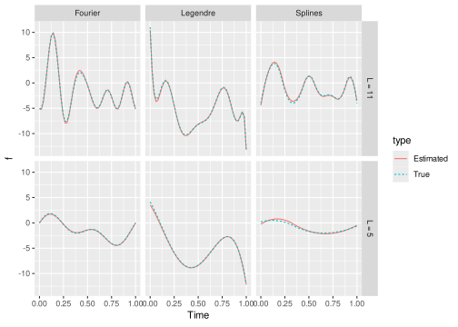
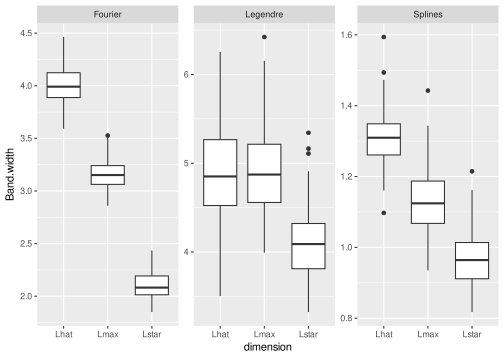

While confidence intervals for finite quantities are well-established, constructing confidence bands for objects of infinite dimension, such as functions, poses challenges. In this paper, we explore the concept of parametric confidence bands for functional data with an orthonormal basis. Specifically, we revisit the method proposed by Sun and Loader, which yields confidence bands for the projection of the regression function in a fixed-dimensional space. This approach can introduce bias in the confidence bands when the dimension of the basis is misspecified. Leveraging this insight, we introduce a corrected, unbiased confidence band. Surprisingly, our corrected band tends to be wider than what a naive approach would suggest. To address this, we propose a model selection criterion that allows for data-driven estimation of the basis dimension, balancing the trade-off between bias and variance. Throughout the paper, we illustrate these strategies using an extensive simulation study. We conclude with an application to real data.
1 Introduction
Functional data analysis is widely used for handling complex data with smooth shapes, finding applications in diverse fields such as neuroscience (e.g., EEG data, ), psychology (e.g., mouse-tracking data, Quinton et al. (2017)), and sensor data from daily-life activities (Jacques and Samardžić (2022)).
We consider multiple independent observations of the same function, yielding noisy functional data. To analyze such data, a common approach, typically in the parametric setting, involves projecting the data onto a functional space defined by a family of functions (Li, Qiu, and Xu (2022), Kokoszka and Reimherr (2017)). When the family serves as an orthonormal basis, e.g., Legendre (with the standard scalar product) or Fourier (with another scalar product), the projection is clearly understood, but widely used families such as splines are not orthonormal for the standard scalar product. Leveraging an approximate functional space offers a key advantage: it simplifies the inference problem to estimating coefficients, for example through methods like least squares or maximum likelihood estimation. Subsequently, the function is estimated as the mean of the functional data following projection onto the functional basis.
Measuring the uncertainty of an estimator is usually done using confidence intervals. In this paper, our focus lies specifically on providing a simultaneous confidence band for the function means, rather than point-wise confidence intervals. This task presents several challenges: the confidence band must effectively control the simultaneous functional type-I error rate, as opposed to point-wise rates; it must strike a balance between being sufficiently conservative to maintain a confidence level while not being overly so as to render it meaningless; and the method used to construct this confidence band should be computationally feasible for practical application.
Several developments have already been proposed to answer these questions. First, consider the case with only one individual (no repetition) but with many time points. Some methods study the asymptotic distribution of the infinity norm between the true function and its estimator. The asymptotic in the number of time points is studied in Hall (1991), Claeskens and Van Keilegom (2003). This approach works only for large datasets in time and is likely to be too conservative otherwise. For small samples, bootstrap methods have been developed to compute the confidence band (Neumann and Polzehl (1998), Claeskens and Van Keilegom (2003)), but with a high computational cost. Another approach is to construct confidence bands based on the volume of the tube formula. Sun and Loader (1994) studied the tail probabilities of suprema of Gaussian random processes. This approach is based on an unbiased linear estimator of the regression function. Zhou, Shen, and Wolfe (1998) used the volume-of-tube formula for estimation by regression splines. Krivobokova, Kneib, and Claeskens (2010) used this method for the construction of confidence bands by penalized spline estimators. They proposed to mix Bayesian and frequentist approaches, to get the good properties from the Bayesian world but reducing the variability to be less conservative using the frequentist approach. The bias is considered through spline modeling, assuming sufficient knots are considered. Liebl and Reimherr (2019) have proposed a method based on random field theory and the volume-of-tube formula. They provide a band with locally varying widths using an unbiased estimator. Their method does not require the estimation of the full covariance function of the estimator, but only its diagonal. This reduces the computational time. From a practical viewpoint, Sachs, Brand, and Gabriel (2022) introduce a package to popularize simultaneous confidence bands, in the context of survival analysis.
Some papers, like ours, rely on several observations of the same function. Bunea, Ivanescu, and Wegkamp (2011) propose a threshold-type estimator and derive error bounds and simultaneous confidence bands, having an unbiased estimator. Telschow and Schwartzman (2022) propose a simultaneous confidence band based on the Gaussian kinematic formula. Again, it assumes access to an unbiased estimator of the function of interest. Note that recent extensions have been proposed, to nonstationary random field in Telschow et al. (2023) and based on conformal prediction in Diquigiovanni, Fontana, and Vantini (2022). These extensions are out of the scope of this paper, focusing on the simple functional case.
One limitation of all those approaches is that they do not generally take into account the bias of the functional estimator. Sun and Loader (1994) proposed a bias correction for a particular class of functions but left the smoothing parameter choice open, leading to an unusable estimator. In the nonparametric framework, the bias is approximated using the estimator of the second derivative of the underlying mean function (Xia (1998)). But in general, there is a lack of discussion on how to handle the bias of the functional estimator, even in the simple case of a functional space of finite dimension.
The objective of this paper is to address the bias problem in confidence band construction for a general function, utilizing a finite functional orthonormal family. Our contributions are as follows:
we disentangle the bias issue by explicitly defining the parameter of interest within the approach of Sun and Loader (1994);
we propose a bias correction method in a new confidence band for the function of interest;
we illustrate this confidence band, concluding on the conservatism of the procedure;
finally, we propose a method for selecting the dimension of the approximation space, treating it as a model selection problem, with a trade-off between conservatism and confidence level assurance.
Note that while the model selection paradigm has been extensively studied in the literature, in multivariate statistics or functional data analysis (e.g., Goepp, Bouaziz, and Nuel (Submitted), Aneiros, Novo, and Vieu (2022), Basna, Nassar, and Podgórski (2022)), it has not been explored in the context of confidence band construction.
The paper is organized as follows: Section 2 introduces the functional regression model, the considered functional family and the corresponding approximate regression models, as well as an estimator defined in the finite space, along with descriptions of the error terms. In Section 3, we propose a confidence band for the approximate regression function in the space of finite dimension, where the dimension is fixed. Section 4 proposes a strategy to construct a confidence band for the true function. This last confidence band being too conservative, Section 5 introduces a model selection criterion to select the best confidence band, doing a trade-off between conservatism and confidence level assurance. Section 7 ends the paper by a conclusion and discussion of perspectives. The different estimation procedures are illustrated throughout the sections.
2 Statistical Model
In this paper, we consider time series as discrete measurements of functional curves. We first present the general functional regression model (Section 2.1) where the regression function belongs to a finite functional family of dimension L^*. In practice, this dimension L^* is unknown and we will work on functional space of dimension L. The regression model on the finite family of functions is presented in Section 2.2, and an estimator is proposed in Section 2.3, with a description of the error terms.
2.1 Functional regression model
Let y_{ij} be the measure at fixed time t_{j} \in [a,b] for individual i=1, \ldots, N, with j=1, \ldots, n. We restrict ourselves to [a,b] = [0,1], without loss of generality. We assume these observations are discrete-time measurements of individual curves, which are independent and noisy realisations of a common function f that belongs to a functional space. Thus for each individual i, we consider the following functional regression model \begin{equation*}
y_{ij} = f(t_{j}) + \varepsilon_{ij},
\end{equation*} where \varepsilon_{i.}=(\varepsilon_{i1}, \ldots, \varepsilon_{in}) is the noise representing the individual functional variation around f. We assume that the \varepsilon_{i} are independent. Their distribution is detailed below.
For each individual i=1, \ldots, N, we denote y_{i.}=(y_{i1}, \ldots, y_{in}) the n\times 1 vector of observations, t_{.}=(t_{1}, \ldots, t_{n}) the n \times 1 vector of observation times and f(t_{.})=(f(t_{1}), \ldots, f(t_{n})) the n \times 1 vector of the function f evaluated in t_{.}. We also denote \mathbf{y} = (y_{1.}, \ldots, y_{N.}) the whole matrix of observations.
Let us introduce the functional space \mathcal{S}^{L^*} = Vect((t \mapsto B_\ell^{L^*}(t))_{1\leq \ell \leq L^*}) with L^* functions (B_\ell^{L^*})_{1\leq \ell \leq L^*} assumed to be linearly independent. Then, for any f \in \mathcal{S}^{L^*}, there exists a unique vector of coefficients (\mu_{\ell}^{L^*})_{1\leq \ell \leq L^*} such that, for all t, f(t) = \sum_{\ell =1}^{L^*} \mu_{\ell}^{L^*} B_\ell^{L^*}(t). The regression function f verifies the following assumption:
Definition 1 The function f belongs to the space \mathcal{S}^{L^*} of dimension L^*. It is denoted {f}^{L^*} and defined as: f(t) = {f}^{L^*}(t) = \sum_{\ell = 1}^{L^*} \mu_\ell^{L^*} B^{L^*}_\ell(t).
Many functional spaces are available in the literature, as Splines, Fourier or Legendre families. Let us consider the space L^2([0,1]) with its standard scalar product <f_1,f_2> = \int_0^1 |f_1(t)f_2(t)|dt, for f_1,f_2 \in L^2([0,1]). We introduce the following assumption:
Definition 2 The functional family (t \mapsto B^{L^*}_\ell(t))_{1\leq \ell\leq L^*} is orthonormal with respect to the standard scalar product <.,.>.
Note that if Definition 2 holds, one get \mu_\ell^{L^*} = <{f}^{L^*},B^{L^*}_\ell> for \ell = 1,\ldots, L^*. The Legendre family is orthonormal, the Fourier family is orthogonal for the standard scalar product (but not orthonormal), and the B-splines family is not orthogonal.
We also consider a functional noise through the following assumption.
Definition 3 The sequence \varepsilon_{i} is functional and belongs to the functional space \mathcal{S}^{L^\varepsilon} of dimension L^\varepsilon. Then, there exists a sequence of coefficients (c_{i\ell})_{1\leq \ell\leq L^\varepsilon} such that \varepsilon_{ij} = \sum_{\ell = 1}^{L^\varepsilon} c_{i\ell} B_\ell^{L^\varepsilon}(t_{j}). We also assume that the coefficients are Gaussian: for all i=1,\ldots, N and \ell=1, \ldots, L^\varepsilon, c_{i \ell} \sim_{iid} \mathcal{N}(0,\sigma^2).
Definition 1 and Definition 3 imply that each curve y_i belongs to a finite family: for j=1,\ldots,n, y_{ij} = \sum_{\ell=1}^{L^*} \mu_{\ell}^{L^*} B_\ell^{L^*}(t_{j}) + \sum_{\ell=1}^{L^\varepsilon} c_{i\ell} B_\ell^{L^\varepsilon}(t_{j}).
As the observations are recorded at discrete time points (t_j)_{1\leq j \leq n}, we introduce the family of functions evaluated at the discrete times of observations. For L\in \mathbb{N}, let us denote \mathbf{B}^L the matrix of n\times L with coefficient in row j and column \ell equal to B^L_\ell(t_{j}).
Let us introduce c_{i.}=(c_{i1}, \ldots, c_{iL^\varepsilon}) the L^\varepsilon \times 1 vector. Then \varepsilon_{i.} = \mathbf{B}^{L^\varepsilon} c_{i.}. The vectors y_{i.} \in \mathbb{R}^n are thus independent and y_i\sim \mathcal{N}_n(f(t_{.}), \sigma^2 \Sigma^{L^\varepsilon}) with \Sigma^{L^\varepsilon} = \mathbf{B}^{L^\varepsilon} (\mathbf{B}^{L^\varepsilon})^T.
To illustrate the model, we simulate a regression functional model with n=50 points per individual and N=40 individuals. In Figure 1, the function f (red curve) belongs to the Fourier (resp. Legendre and Spline) family with L^*=10 and the noisy observations y_{ij} (black curves) have a functional noise in dimension L^{\varepsilon}=20, also in the Fourier (resp. Legendre and Spline) family on the left plot (resp. middle and right).
Code
library(ggplot2)library(fda)library(orthopolynom)library(wavelets)library(basefun)library(fields)library(ggpubr)func.basis =function(time, L, basis){if (basis =='Splines'){ B =bsplineS(time,breaks =seq(min(time), max(time), length.out = L-1), norder =3, 0) } elseif (basis =='Fourier'){ B =fourier(time,nbasis = L) } elseif (basis =='Legendre'){ B =Legendre_basis(numeric_var("x", support =c(min(time), max(time))), order = L-1)(time) }return(B)}dgp =function(n=50,N=40,sd=1,L.star=11, L.eps =20, alpha.mu =NULL, basis ='Fourier', f.true =NULL){ ### n: number of timepoints### N: number of individuals### sd: noise level (standard deviation)### L: number of functional basis for the signal### L.eps: number of functional basis for the noise### alpha.mu: vector of coefficients### basis: functional basis, to be chosen in 'Legendre', 'Fourier', 'Splines'### f.true: if one wants to fix the true function time =seq(0, 1, length.out = n)if (basis =='Fourier'){if (L.star%%2==0){ L.star = L.star+1}if (L.eps%%2==0){ L.eps = L.eps+1} }if (is.null(f.true)){### Create the functional basis B =func.basis(time, L.star, basis)### Generate randomly coefficients, if neededif (is.null(alpha.mu)){ alpha.mu =sample(x =c(-5:-2, 2:5),size=L.star,replace=TRUE)} if (basis =='Fourier'){ alpha.mu = alpha.mu /3 sd = sd/2 } y =matrix(0,nrow = N, ncol = n) f.true = B %*% alpha.mu } B.eps =func.basis(time, L.eps, basis) y =matrix(0,nrow = N, ncol = n)for (i in1:N){ y[i,] = f.true + B.eps %*%matrix(rnorm(L.eps, 0, sd)) }return(list(y =t(y), alpha.mu = alpha.mu, time = time, L.star=L.star, f.true = f.true))}set.seed(1)n=50N=40sd=1L.star=11L.eps =20alpha.mu =NULLset.seed(1)basis ="Legendre"data =dgp(n=n,N=N,sd=sd,L.star=L.star, L.eps = L.eps, alpha.mu = alpha.mu, basis = basis, f.true =NULL)dfLegendre =data.frame( Time =rep(data$time,N+1),basis =rep(basis, (N+1)*length(data$time)),f =c(data$y, data$f.true),type =rep(c(rep("obs", N), "True"), each = n), ind =rep(1:(N+1), each = n))basis ="Fourier"data =dgp(n=n,N=N,sd=sd,L.star=L.star, L.eps = L.eps, alpha.mu = alpha.mu, basis = basis, f.true =NULL)dfFourier =data.frame( Time =rep(data$time,N+1),basis =rep(basis, (N+1)*length(data$time)),f =c(data$y, data$f.true),type =rep(c(rep("obs", N), "True"), each = n), ind =rep(1:(N+1), each = n))basis ="Splines"data =dgp(n=n,N=N,sd=sd,L.star=L.star, L.eps = L.eps, alpha.mu = alpha.mu, basis = basis, f.true =NULL)dfSplines =data.frame( Time =rep(data$time,N+1),basis =rep(basis, (N+1)*length(data$time)),f =c(data$y,data$f.true),type =rep(c(rep("obs", N), "True"), each = n), ind =rep(1:(N+1), each = n))df =rbind(dfLegendre, dfFourier, dfSplines)ggplot(data = df, aes(x = Time, y = f, color = type, group = ind)) +geom_line(linewidth=0.5)+scale_colour_manual(values =c("obs"="lightgrey","True"="red")) +facet_grid(~basis)
Figure 1: Illustrative example. We generate a regression functional model in the Fourier (left), Legendre (middle) and Splines (right) families. The red curve corresponds to the true function, and the gray curves correspond to noisy observations.
The objective of this paper is to construct a tight confidence bound for f^{L^*} using data (y_{ij})_{ij}. The main challenge is that the true dimension L^* is unknown. In the rest of the paper, we will work with a collection of models defined on a finite family of dimension L with L\in \{L_{\min}, \ldots, L_{\max}\}, L_{\max} being chosen to be sufficiently large by the user, expecting that L^*\leq L_{\max}. Then we will propose different strategies to choose the best bandwidths among the different collections.
First, in Section 2.2 and Section 2.3, we define for a fixed L the corresponding regression model and its estimator. Then Section 3, Section 4 and Section 5 will introduce the different bandwidths.
2.2 Approximation of the model on a finite family
Let f^{L^*} \in \mathcal{S}^{L^*} with L^* unknown, and consider the space \mathcal{S}^L for L\in \{1, \ldots, L_{\max}\} fixed. As \mathcal{S}^L is a family of linearly independent functions, there always exists a unique vector \mu^{L,L^*} of coefficients defining f^{L,L^*}(t) = \sum_{\ell_=1}^L \mu_\ell^{L,L^*} B_\ell^L(t)=B^L(t) \mu^{L,L^*} such that f^{L,L^*} = \arg\min_{f \in \mathcal{S}^L}\{\|f^{L^*} - f\|_2^2\}, and if the family is orthonormal (Definition 2), it corresponds to the projected coefficients \mu_{\ell}^{L,L^*}: \mu_{\ell}^{L,L^*} :=<f^{L^*}, B_\ell^L>.
We can prove the following property:
Proposition 1 Under Definition 1, f^{L^*,L^*} = f^{L^*}. Moreover, if Definition 2 also holds, the projection coefficients verify \mu_{\ell}^{L,L^*} = \mu_\ell^{L^*} \quad{ for }\; \ell =1, \ldots, \min(L, L^{*}).
In practice, data are observed at discrete time, we consider the operator \mathbf{P}^L defined as the matrix \mathbf{P}^L = ((\mathbf{B}^L)^T \mathbf{B}^L)^{-1} (\mathbf{B}^L)^T of size L\times n (this operator is a bit more complex when the functional family is not orthonormal wrt the standard scalar product). Then we define the coefficients \underline{\mu}^{L,L^*} which are the coefficients of {\mu}^{L,L^*} approximated on the vector space, denoted \mathbf{S}^L, defined by the matrix \mathbf{B}^L. \underline{\mu}^{L,L^*} := \mathbf{P}^L \mathbf{B}^{L^*}\mu^{L^*}.
The corresponding finite approximated regression function is denoted \underline{f}^{L,L^*} and is defined, for all t\in [0,1], as \underline{f}^{L,L^*}(t) = B^L(t) \underline{\mu}^{L,L^*}.
We can prove the following properties linking L, L^* and the number of timepoints n:
When L\geq L^*, \mathbf{P}^L \mathbf{B}^{L^*} has L^* diagonal elements equal to 1 and other non-diagonal elements close to 0. The first L^* elements of \underline{\mu}^{L,L^*} are equal to \mu^{L^*} when n>L.
When L<L^*, \mathbf{P}^L\mathbf{B}^{L^*} has L diagonal elements equal to 1. The first L elements of \underline{\mu}^{L,L^*} are different to \mu_\ell^{L^*}. When n\rightarrow\infty, \underline{\mu}_\ell^{L,L^*}\rightarrow \mu_\ell^{L^*} for \ell = 1,\ldots, \min(L,L^*).
If n>L^*, then f^{L^*} = f^{L^*,L^*} = \underline{f}^{L^*,L^*}.
These properties are illustrated in Figure 2. The true dimension is L^*=11. Three families are considered, Fourier, Legendre and Splines. The plots display the absolute difference between the coefficients \mu_\ell^{L^*} and the projected coefficients \underline{\mu}^{L,L^*}, for different \ell in x-axis and for different values of L and n of the y-axis, namely a case with L<L^* and two values of n: L=7, n=20 and L=7, n=100; and a case with L>L^* and two values of n: L=15, n=20 and L=15, n=100. The absolute difference is represented as a gradient of color, this gradient being adapted for each functional family. We can see that as Legendre (resp. Fourier) are orthonormal (resp. orthogonal) families, the differences are close to 0 when L=15, whatever the values of n. When L<L^*, the difference is close to 0 when n is large. This property does not hold for the spline family, which is not orthogonal.
Figure 2: Illustrative example. The true dimension is 11, we generate the coefficients with three families, Fourier (which is orthogonal), Legendre (which is orthonormal) and the splines (which are not orthogonal wrt the standard scalar product). In the y-axis, two dimensions of the family (7 or 15) and two numbers of timepoints (20 or 100) are compared. We plot in x-axis the value of the absolute difference between the true coefficients and their approximations for the first 7 coefficients of the basis. The color scale is adapted to each functional basis.
2.3 Estimator
Let L\in \{L_{\min}, \ldots, L_{\max}\}. This section presents the least square estimator of the regression function on the space of dimension L defined by the family \mathbf{B}^L and discusses its error.
2.3.1 Estimation of the regression function
When considering the estimation of the regression function f^{L^*} on the space of dimension L defined by the family \mathbf{B}^L, we do not directly estimate f^{L^*} but its projection on this finite space, which corresponds to the projected function \underline{f}^{L,L^*}(t) and its associated coefficients (\underline{\mu}_\ell^{L,L^*})_{1 \leq \ell \leq L}.
Definition 4 The vector of coefficients (\underline{\mu}_\ell^{L,L^*})_{1 \leq \ell \leq L} is estimated by the least square estimator \hat{\underline{\mu}}^{L, L^*} defined as: \begin{align*}
\hat{\underline{\mu}}^{L, L^*}:=\frac1N \sum_{i=1}^N
\mathbf{P}^L y_{i.}.
\end{align*}
For a fixed t \in [0,1], the estimator of the function \underline{f}^{L,L^*}(t) is defined by:
Equation 1 directly implies that the estimator is thus the empirical mean of the functional approximation of each individual vector of observations. Because we work with least squares estimators, we can easily study the error of estimation of \hat{\underline{\mu}}^{L, L^*} and \underline{\hat{f}_{}}^{L,L^*}.
Proposition 3 Under Definition 1 and Definition 3, we have \begin{align*}
\hat{\underline{\mu}}^{L, L^*}
&\sim \mathcal{N}_L\left(\underline{\mu}^{L, L^*}, \frac{\sigma^2}N\Sigma_{B}^{L,L^\varepsilon}
\right),
\end{align*} where the L\times L covariance matrix \Sigma_{B}^{L,L^{\varepsilon}} is defined as \Sigma_{B}^{L,L^\varepsilon}:=\mathbf{P}^L \Sigma^{L^\varepsilon} (\mathbf{P}^L)^T with \Sigma^{L^\varepsilon}= \mathbf{B}^{L^\varepsilon} (\mathbf{B}^{L^\varepsilon})^T.
Moreover, B^L()\mathbf{P}^L y_i is a Gaussian process with mean \underline{f}^{L,L^*}() and covariance function (s,t) \mapsto \sigma^2 B^L(s) \Sigma_{B}^{L,L^\varepsilon} (B^L(t))^T, and (\underline{\hat{f}_{}}^{L,L^*}- \underline{f}^{L,L^*})() is a centered Gaussian process with covariance function C^{L,L^*}: (s,t) \mapsto \frac{\sigma^2}N B^L(s) \Sigma_{B}^{L,L^\varepsilon} B^L(t)^T.
The proof is given in Appendix.
Figure 3 displays estimators calculated with different dimensions L. Data are generated with L^*=11, L^\varepsilon=20, n=50 and N=40. The true function and its projection \underline f^{L,L^*} are in cyan, and the estimator \underline{\hat{f}_{}}^{L,L^*} is in red. We compute it for the three families, Legendre, Fourier and splines. In all cases, the estimators are very precise when considering the relevant function, but estimating a function of dimension L^* with a function of dimension L<L^* is not consistent. Note that the performance of the estimator for the spline family is also good, even if the family is not orthonormal, because we work here at the level of the function (and not at the level of the coefficients).
Code
estimator =function(data, basis, L){### data: the observations, only the timepoints and the individual functions### basis: functional basis, to be chosen in 'Fourier', 'Splines'### L: number of functional basis for the signalif (basis =='Fourier'){if (L%%2==0){ L = L+1} } B =func.basis(data$time, L, basis)### Data projection Hi =solve(t(B) %*% B) %*%t(B) %*% data$y mu.hat =rowMeans(Hi) f.hat =c(B %*% mu.hat) data.proj = data data.proj$y = B %*% Hi cov.emp =crossprod(t(data.proj$y - f.hat)) /ncol(data.proj$y)return(list(f.hat=f.hat, mu.hat = mu.hat, cov.emp = cov.emp, data.proj = data.proj))}set.seed(1)basis ="Legendre"data =dgp(n=50,N=40,sd=1,L.star=11, L.eps =20, alpha.mu =NULL, basis = basis, f.true =NULL)B =func.basis(data$time, L=5, basis)f.true.L5 =t(B %*%solve(t(B) %*% B) %*%t(B) %*% data$f.true)est5 =estimator(data, basis, L=5)est11 =estimator(data, basis, L=11)dfLegendre =data.frame( Time =rep(data$time,4),basis =rep(basis, 4*length(data$time)),f =c(data$f.true, c(f.true.L5), est5$f.hat, est11$f.hat),L =rep(c("L = 11", "L = 5", "L = 5", "L = 11"), each =length(data$time)),type =rep(c("True", "True", "Estimated", "Estimated"), each =length(data$time)))basis ="Fourier"data =dgp(n=50,N=40,sd=1,L.star=11, L.eps =20, alpha.mu =NULL, basis = basis, f.true =NULL)B =func.basis(data$time, L=5, basis)f.true.L5 =t(B %*%solve(t(B) %*% B) %*%t(B) %*% data$f.true)est5 =estimator(data, basis, L=5)est11 =estimator(data, basis, L=11)dfFourier =data.frame( Time =rep(data$time,4),basis =rep(basis, 4*length(data$time)),f =c(data$f.true, c(f.true.L5), est5$f.hat, est11$f.hat),L =rep(c("L = 11", "L = 5", "L = 5", "L = 11"), each =length(data$time)),type =rep(c("True", "True", "Estimated", "Estimated"), each =length(data$time)))basis ="Splines"data =dgp(n=50,N=40,sd=1,L.star=11, L.eps =20, alpha.mu =NULL, basis = basis, f.true =NULL)B =func.basis(data$time, L=5, basis)f.true.L5 =t(B %*%solve(t(B) %*% B) %*%t(B) %*% data$f.true)est5 =estimator(data, basis, L=5)est11 =estimator(data, basis, L=11)dfSplines =data.frame( Time =rep(data$time,4),basis =rep(basis, 4*length(data$time)),f =c(data$f.true, c(f.true.L5), est5$f.hat, est11$f.hat),L =rep(c("L = 11", "L = 5", "L = 5", "L = 11"), each =length(data$time)),type =rep(c("True", "True", "Estimated", "Estimated"), each =length(data$time)))df =rbind(dfLegendre, dfFourier, dfSplines)ggplot(data = df, aes(x = Time, y = f, color = type)) +geom_line(aes(linetype = type), linewidth=0.5)+facet_grid(L~basis)

Figure 3: Illustrative example. For each family (Fourier which is orthogonal, Legendre which is orthonormal and the splines which are not orthogonal wrt the standard scalar product), we consider a function with true dimension 11 (top), and its projection on the space of dimension 5 (bottom), displayed in cyan. The estimators in dimensions 11 and 5 are displayed in red.
Even if the estimator \underline{\hat{f}_{}}^{L,L^*} is defined on the functional space associated to \mathbf{S}^L, it can also be seen as an estimator of the function f^{ L^*} which lies in the space \mathcal{S}^{L^*}. In that case, the error includes a functional approximation term due to the approximation of f^{ L^*} on the space \mathcal{S}^L, which will be nonzero if L\neq L^*. It corresponding to the bias of the estimator \underline{\hat{f}_{}}^{L,L^*}, i.e. the difference between its expectation and the true f^{ L^*}. Indeed, recalling that f^{L^*} = \underline{f}^{L^*,L^*}, the error of estimation can be decomposed into
\underline{\hat{f}}^{L, L^*}(t) -f^{L^*}(t)
= \underline{\hat{f}}^{L, L^*}(t) - \underline{f}^{L, L^*}(t) + \underline{f}^{L, L^*}(t) - \underline{f}^{L^*,L^*}(t) =: Stat_{L,L^*}(t) + Bias_{L,L^*}(t),
\tag{2}
The first term Stat_{L,L^*}(t) = \underline{\hat{f}}^{L, L^*}(t) - \underline{f}^{L, L^*}(t) is the (unrescaled) statistics of the model. The second term Bias_{L,L^*}(t) = \mathbb{E}(\underline{\hat{f}}^{L, L^*}(t)) - \underline{f}^{L^*,L^*}(t) is the bias of the estimator \underline{\hat{f}}^{L, L^*}(t) when estimating the true function \underline{f}^{L^*,L^*}(t).
Let us remark that this bias is different than the bias of the estimator \underline{\hat{f}}^{L, L^*}(t) when estimating the projected function \underline{f}^{L,L^*}=f^{ L^*}, which is 0.
The two terms defined in Equation 2 are more detailed in the two next subsections.
2.3.2 Statistics
The statistics of the model, t\mapsto Stat_{L,L^*}(t) = \underline{\hat{f}}^{L, L^*}(t) - \underline{f}^{L, L^*}(t), is a random functional quantity which depends on the estimator \underline{\hat{f}}^{L, L^*}. From Proposition 3, for any t\in [0,1], we define the centered and rescale statistics Z_L(t) such that: Z_L(t):= \frac{Stat_{L,L^*}(t)}{\sqrt{\text{Var}(Stat_{L,L^*}(t))}}
= \frac{\underline{\hat{f}}^{L, L^*}(t) - \underline{f}^{L, L^*}(t)}{\sqrt{C^{L, L^*}(t,t)}}\sim \mathcal{N}(0,1).
The covariance function can be estimated using the observations y_{i.} as \hat C^{L, L^*}(s,t) = \frac1{N-1}\sum_{i=1}^{N} (B^L(s)\mathbf{P}^L y_{i.} - \underline{\hat{f}_{}}^{L,L^*}(s))(B^L(t)\mathbf{P}^L y_{i.} - \underline{\hat{f}_{}}^{L,L^*}(t)).
2.3.3 Bias
The bias is due to the fact that the estimation is potentially performed in a different (finite) space than the space where the true function \underline{f}^{L^*,L^*} lives. This is a functional bias, which is not random. It corresponds to the approximation (orthogonal projection if Definition 2 holds) of f^{L^*} from \mathcal{S}^{L^*} to the space \mathcal{S}^{L}. It can be written as follows: Bias_{L,L^*}(t) = B^L(t) \underline{\mu} ^{L,L^*} - B^{L^*}(t) \mu^{L^*}. Thus, we can deduce that when L<L^* and if the family is orthonormal (Definition 2 holds), Bias_{L,L^*}(t)= \sum_{\ell=1}^L B_\ell^L(t)\underline{\mu}_\ell^{L,L^*} - \sum_{\ell=1}^{L^*} B_\ell^{L^*}(t)\underline{\mu}_\ell^{L^*} = \sum_{\ell = L+1}^{L^*} B_\ell^{L^*}(t)\underline{\mu}_\ell^{L^*}.
From Proposition 3, we can directly deduce the following proposition:
In the next section, we explain how to use this property to derive confidence bands of \underline{f}^{L, L^*} and f^{L, L^*}.
3 Confidence Bands of \underline{f}^{L, L^*} and f^{L, L^*} for a fixed L
The objective is to construct a confidence band for the two functions \underline{f}^{L, L^*} and f^{L, L^*}, based on the observations \mathbf{y}, for a given value L\in \{L_{\min}, \ldots, L_{\max}\}. The band for \underline{f}^{L, L^*} enters the framework proposed by Sun and Loader (1994) which relies on an unbiased and linear estimator of the function. This is the case for the estimator \underline{\hat f}^{L, L^*} which is an unbiased estimator of \underline{f}^{L, L^*}. We recall in Section 3.1 the construction of this confidence band which attains a given confidence level in a non-asymptotic setting, that is for a finite number of observations n for each individual. Then in Section 3.2, we prove that the confidence band proposed by Sun and Loader (1994) can be viewed as a confidence band for f^{L, L^*} with an asymptotic confidence level, the asymptotic framework being considered when n\rightarrow\infty.
3.1 Confidence band for \underline{f}^{L,L^*}
Let L\in \{1, \ldots, L_{\max}\}. Consider 1-\alpha as a fixed confidence level. Our aim is to find a function d^L() such that \mathbb{P}\left( \forall t \in [0,1],\; \underline{\hat{f}_{}}^{L,L^*}(t) -d^L(t)\leq \underline{f}^{L,L^*}(t)\leq \underline{\hat{f}_{}}^{L,L^*}(t) +d^L(t)\right) = 1-\alpha. Consider the normalized statistics Z_L(t) which is a centered and reduced Gaussian process. We want to find the quantile q^L satisfying
Then we can take d^L(t) = q^L \sqrt{C^{L, L^*}(t,t)}. The covariance function C^{L, L^*}(t,t) can be replaced by its estimator \hat{C}^{L,L^*}(t,t), making the distribution a Student’s distribution with N-1 degrees of freedom. Thus, it only requires to be able to compute the critical value q^L.
This can be done following Sun and Loader (1994) who propose a confidence band for a centered Gaussian process. Their procedure is based on an unbiased linear estimator of the function of interest, which is the case for \underline{\hat{f}_{}}^{L,L^*} when we consider a band for \underline{f}^{L,L^*}. We recall their result in the following proposition, the computation of the value q^L is detailed thereafter.
Theorem 1 (Sun and Loader (1994)) Set Definition 1 and Definition 3 and a probability \alpha\in [0,1]. Then, we have \mathbb{P}\left(\forall t \in [0,1], \left|\underline{\hat{f}}^{L, L^*}(t)-\underline{f}^{L,L^*}(t)\right| \leq \hat d^L(t)\right) = 1- \alpha with \begin{align*}
\hat d^L(t) = \hat q^L \sqrt{\hat C^{L,L^*}(t,t)/N};
\end{align*} and \hat q^L defined as the solution of the following equation, seen as a function of q^L:
\alpha = \mathbb{P}(|t_{N-1}|>q^L) +\frac{\| \tau^L\|_1}{\pi}\left( 1+\frac{(q^L)^2}{N-1}\right)^{-(N-1)/2} ,
\tag{4} with (\tau^L)^2(t)= \partial_{12} c(t,t) = Var(Z_L(t))' where we denote \partial_{12}c(t,t) the partial derivatives of a function c(t,s) in the first and second coordinates and then evaluated at t=s.
We can thus deduce a confidence band of level 1-\alpha for \underline{f}^{L,L^*}: \begin{align*}
CB_1(\underline{f}^{L,L^*})& = \{ \forall t\in [0,1], [\underline{\hat{f}}^{L, L^*}(t) -\hat d^L(t) ; \underline{\hat{f}}^{L, L^*}(t) +\hat d^L(t) ]\}.
\end{align*}
The value \hat q^L is defined implicitly in Equation 4 which involves the quantity t\mapsto \tau^L(t). Liebl and Reimherr (2019) propose to estimate \tau^L(t), for all t, by \begin{align*}
\hat \tau^L(t) &= \left(\widehat{Var}(({U}^{L})'_{1}(t), \ldots, ({U}^{L})'_{N}(t)\right)^{1/2}\\
&= \left(\frac{1}{N-1}\sum_{i=1}^N\left(({U}^{L})'_{i}(t)-\frac1N\sum_{j=1}^N({U}^{L})'_{j}(t)\right)^2\right)^{1/2},
\end{align*} where {U}^L_{i}(t) = (P^L y_i(t)-\underline{\hat{f}}^{L, L^*}(t))/(\hat C^{L,L^*}(t))^{1/2} and ({U}^{L})'_{i} is a smooth version of the differentiated function {U}^L_{i}. Then we take the L_1-norm of \hat \tau^L.
Let us describe the behavior of \hat d^L:
\|\hat d^L\|_\infty increases with L
When the functions (B_\ell^L)_{1\leq \ell \leq L} consists in an orthonormal family, \|\hat d^L\|_\infty increases with L until L=L^* and then \|\hat d^L\|_\infty is constant with L.
This band is illustrated on Figure 4. It displays on the top row several functional data generated under either the Fourier family (left), Legendre (middle) or Spline (right), on the middle row the confidence bands of \underline f^{L,L^*} for different values of L=3,5 and 11, and on the bottom row the bound \hat d^L. The true functions \underline f^{L,L^*} are displayed in cyan and the confidence bands in purple. The bands are very precise for each L. The behavior of \hat d^L increases with L. As d^L can be seen as a variance, \hat d^L(t) is larger on the boundary of the domain, as there are less observations near 0 and 1.
We also evaluate numerically the levels of the obtained confidence bands. For this, 1000 datasets are simulated, the confidence band is estimated for each of them. The empirical confidence level is then evaluated as the proportion of confidence bands that contain the true function. Table 1 presents the empirical confidence levels for different values of L and two sample sizes n=50 and n=150, with N=40. The level is the expected one whatever the value of L, especially when L<L^* and L>L^* but also when L>L^\varepsilon. We will see in the next sections that this will not be the case for the debiased confidence band.
Code
compute.c.L =function(data.scl, alpha =0.05){### data.scl: the rescaled data ### alpha: the level for the confidence band x_approx =apply(data.scl$y, 2,FUN=function(yy){ fn = stats::splinefun(x = data.scl$time, y = yy, method ="natural") pracma::fderiv(f = fn, x = data.scl$time, n =1, h =1e-6, method ="central") }) N =ncol(data.scl$y) hat.tau =apply(x_approx, 1, stats::sd) hat.tau[which(is.na(hat.tau))] =0 tau_01 = (hat.tau)[-1]%*%diff(data.scl$time) myfun =function(c){stats::pt(c, lower.tail =FALSE, df = N-1) + tau_01 * (1+ c^2/(N-1))^(-(N-1)/2)/(2* pi) - alpha/2} c.L = stats::uniroot(f = myfun,interval =c(.5,8))$rootreturn(c.L)}compute.conf.band.L =function(data, basis, L, alpha =0.05){### data: the observations, only the timepoints and the individual functions### basis: functional basis, to be chosen in 'Fourier', 'Splines'### L: number of functional basis for the signal### alpha: the level for the confidence band est =estimator(data, basis, L) data.proj = est$data.proj data.scl = data.proj data.scl$y = (data.proj$y - est$f.hat)/sqrt(diag(est$cov.emp)) c.L =compute.c.L(data.scl, alpha) d.L = c.L %*%sqrt(diag(est$cov.emp)/ncol(data.scl$y)) f.hat.up = est$f.hat + d.L f.hat.low = est$f.hat - d.Lreturn(list(f.hat.up = f.hat.up, f.hat.low = f.hat.low, d.L = d.L, c.L = c.L))}d.L.Lmax =function(data, basis, L, Lmax=30, alpha =0.05){ est.2.f =estimator(data, basis, L) data.2.proj = est.2.f$data.proj est.2.f.Lmax =estimator(data, basis, Lmax) data.2.proj.Lmax = est.2.f.Lmax$data.proj residuals.L.Lmax = data.2.proj.Lmax$y - data.2.proj$y - (est.2.f.Lmax$f.hat - est.2.f$f.hat) cov.emp.rest =diag(crossprod(t(residuals.L.Lmax))) /ncol(residuals.L.Lmax) data.2.scl = data.2.proj data.2.scl$y = residuals.L.Lmax/sqrt(cov.emp.rest) c.L.Lmax.2=compute.c.L(data.2.scl, alpha) d.L.Lmax.2= c.L.Lmax.2%*%sqrt(cov.emp.rest/ncol(data.2.scl$y))return(c.L.Lmax.2)}
Code
dfObs =data.frame(Time =double(),basis =character(),f =double(),ind =integer())dfTrue =data.frame(Time =double(),basis =character(),f =double())dfTrueProjected =data.frame(Time =double(),basis =character(),f =double(),dimension =character())dfBand <-data.frame(Time =double(),basis =character(),flow =double(),fup =double(),dimension =character())dfdL <-data.frame(Time =double(),basis =character(),dL =double(),dimension =character())vec.L =c(3,5,11)for (basis inc("Legendre", "Fourier", "Splines")){ N =40 data =dgp(n=50,N=N,sd=1,L.star=10, L.eps =20, alpha.mu =NULL, basis = basis, f.true =NULL) dfObs =rbind(dfObs,data.frame(Time =rep(data$time, N),basis =rep(basis, length(c(data$y))),f =c(data$y),ind =rep(1:N, each =length(data$time)))) dfTrue =rbind(dfTrue,data.frame(Time = data$time,basis =rep(basis, length(data$time)),f = data$f.true))for (L in vec.L){ conf.band =compute.conf.band.L(data, basis, L) B =func.basis(data$time, L, basis) f.true.L =t(B %*%solve(t(B) %*% B) %*%t(B) %*% data$f.true) dfBand =rbind(dfBand, data.frame(Time = data$time,basis =rep(basis, length(data$time)),flow =c(conf.band$f.hat.low), fup =c(conf.band$f.hat.up), dimension =as.factor(rep(L, length(data$time))))) dfTrueProjected =rbind(dfTrueProjected, data.frame(Time = data$time,basis =rep(basis, length(data$time)),f =c(f.true.L), dimension =rep(L, length(data$time)))) dfdL =rbind(dfdL, data.frame(Time = data$time,basis =rep(basis, length(data$time)),dL =c(conf.band$d.L),dimension =as.factor(rep(L,length(data$time))))) } }p1 <-ggplot() +geom_line(data = dfObs, aes(x = Time, y = f, group = ind), linewidth =0.1, color ="grey") +geom_line(data = dfTrue, aes(x = Time, y = f), colour ="black", linewidth =0.5) +facet_grid(~basis)p2 <-ggplot() +geom_line(data = dfBand, aes(x = Time, y = flow, group = dimension, color = dimension), linewidth =0.8) +geom_line(data = dfBand, aes(x = Time, y = fup, group = dimension, color = dimension), linewidth =0.8) +geom_line(data = dfTrueProjected, aes(x = Time, y = f, group = dimension), colour ="black", linewidth =0.2)+facet_grid(~basis) +ylab("confidence band")p3 <-ggplot() +geom_line(data = dfdL, aes(x = Time, y = dL, group = dimension, color = dimension)) +facet_grid(~basis)ggarrange(p1, p2, p3, nrow =3, common.legend =TRUE, legend ="bottom")
Figure 4: Illustrative example. For the three families, resp. Fourier, Legendre and the splines, we display on the top row the observed functional data, on the middle row the confidence bands for different values of L (3, 5 and 11), and on the bottom row the bound dL.
Table 1: Illustrative example. The confidence level of the confidence band is evaluated from 1000 repetitions. Confidence bands are calculated with the Legendre family, for several L in rows and several n in columns.
50
150
3
0.972
0.957
5
0.950
0.950
11
0.944
0.952
15
0.968
0.945
21
0.938
0.943
3.2 Asymptotic confidence band for f^{L,L^*}
Note that if one works in the asymptotic framework n\rightarrow\infty, the previous definition of \hat d^L induces a natural asymptotic confidence band for the function f^{L,L^*}. Indeed, we can prove that
Theorem 2 Set Definition 1 and Definition 3 and a probability \alpha\in [0,1]. Then, we have, \lim_{n \rightarrow +\infty} \mathbb{P}\left(\forall t \in [0,1], |\underline{\hat{f}}^{L, L^*}(t)-f^{L,L^*}(t)| \leq \hat d^L(t)\right) = 1-\alpha, with \hat d^L(t) = \hat q^L \sqrt{\hat C^{L,L^*}(t,t)/N} and \hat q^L defined as the solution of Equation 4.
The proof is given in Appendix.
Then a confidence band for f^{L,L^*} at the asymptotic confidence level 1-\alpha for a large number of observations n is given by \begin{align*}
CB(f^{L,L^*})& = \{ \forall t\in [0,1], [\underline{\hat{f}}^{L, L^*}(t) -\hat d^L(t) ; \underline{\hat{f}}^{L, L^*}(t) +\hat d^L(t) ]\}.
\end{align*}
We do not provide any illustration of this property, as it would be similar than the previous ones. Indeed, we notice that the asymptotic is achieved even when n is small on our examples.
4 Confidence Band of f^{L^*} by correcting the bias
The function of interest is f^{L^*}=\underline{f}^{L^*, L^*}, rather than \underline{f}^{L,L^*}. Therefore, our aim is to construct a confidence bound for f^{L^*}. However, an unbiased estimator of f^{L^*} is unavailable by definition, since the true dimension L^* is unknown. Instead, we propose to work with the estimator \underline{\hat f}^{L,L^*} and to debias the corresponding confidence band.
To achieve this, we use the decomposition outlined in Equation 2 between the bias term and the statistical term. The idea is to bound the infinity norm of these two terms. A first strategy consists in bounding each term separately and then summing the two bounds to construct the confidence band. However, this approach tends to produce a band that is too large and conservative. The reason is that applying the infinite norms on each term before bounding them does not take into account the functional nature of the two terms. This approach is presented in details in Appendix.
A second strategy consists in keeping the functional aspect by bounding the infinity norm of the sum of the functional two terms. This approach is detailed in this section.
In Section 4.1, we first rewrite the band as a band around \underline{f}^{L,L^*}(t). We then use a first subsample \mathbf{y}^1 to estimate the bound as defined in Section 3. A second subsample \mathbf{y}^2 is used to estimate the bias term (without the infinite norm). This yields a pointwise correction of the bias, and the final confidence band is centered around \underline{\hat{f}}^{L_{\max},L^*}. This procedure provides a collection of confidence bands, for L=L_{\min}, \ldots, L_{\max}, each achieving a given confidence level but with varying width. Then, in Section 4.2, we propose a criterion to select the “best” band by minimizing its width.
4.1 Construction of the band of f^{L^*} for a given L
We introduce two independent sub-samples \mathbf{y}^1 and \mathbf{y}^2 of \mathbf{y} of length n_1 and n_2 such that n_1+n_2=n.
We use the first sub-sample \mathbf{y}^1 to calculate \underline{\hat{f}_1}^{L,L^*}(t), an estimator of \underline{f}^{L,L^*}(t) and a functional bound denoted \hat d_1^L that controls the bias term \underline{f}^{L,L^*}(t)-\underline{\hat{f}_1}^{L,L^*}(t). This bound is defined in Section 3 applied on \mathbf{y}^1, for a given level \alpha, such that:
Then, we need to control the bias Bias_{L,L^*}(t) = \underline{f}^{L,L^*}(t)-f^{L^*}(t). Recall than when L_{\max} is large enough and n> L_{\max}, f^{L^*} = \underline{f}^{L_{\max},L^*}. Therefore, we want to control the Bias_{L,L^*}(t) = \underline{f}^{L,L^*}(t) - \underline{f}^{L_{\max},L^*}(t). It would be tempting to replace Bias_{L,L^*}(t) by its estimation based on the second sample \mathbf{y}^2. But this would introduce an estimation error that we also need to control, in the same spirit than what is done in (PCO?). We can use again Section 3 to compute the function \hat d_2^{L,L_{\max}}(t) on the sample \mathbf{y}^2, and the functional estimators \underline{\hat{f}}_2^{L,L^*}(t) and \underline{\hat f}_2^{L_{\max}, L^*}(t) of \underline{f}^{L,L^*}(t) and \underline{ f}^{L_{\max}, L^*}(t), respectively. This allows to construct the following band for \underline{f}^{L,L^*}(t) - \underline{f}^{L_{\max},L^*} for a confidence level 1-\beta,
Combining Equation 5 and Equation 6, we can provide a debiased confidence band of f^{L^*}(t).
Proposition 5 Let us define \begin{align*}
\hat\theta_1^L(t) &:= -\hat d_1^L(t) - \hat d_2^{L,L_{\max}}(t) +\underline{\hat f}_2^{L_{\max}, L^*}(t)-\underline{\hat f}_2^{L, L^*}(t) \\
\hat\theta_2^L(t)&:= \hat d_1^L(t) + \hat d_2^{L,L_{\max}}(t) +\underline{\hat f}_2^{L_{\max}, L^*}(t) - \underline{\hat f}_2^{L, L^*}(t),
\end{align*} where \hat d_1^L(t) is defined on sample \mathbf{y}^1 by Equation 5 for a level \alpha and \hat d_2^{L,L_{\max}}(t) is defined on sample \mathbf{y}^2 by Equation 6 for a level \beta. Then we have \begin{align*}
\mathbb{P}\left(\forall t \in [0,1], \quad \hat \theta_1^L(t) \leq f^{L^*}(t)- \underline{\hat f}_1^{L, L^*}(t)\leq \hat\theta_2^L(t)\right)\geq 1-\alpha\beta.
\end{align*}
The proof is given in Appendix.
This defines a confidence band which can be defined either around \underline{\hat{f}_{1}}^{L,L^*}: \begin{align*}
CB_2(\underline{f}^{L^*})=\{\forall t\in[0,1], [\underline{\hat{f}_1}^{ L, L^*}(t) + \hat\theta_1^{ L}(t) \, ;\, \underline{\hat{f}_1}^{ L, L^*}(t) + \hat\theta_2^{ L}(t) ] \}
\end{align*} or around \underline{\hat f}_2^{ L_{\max}, L^*}: \begin{align*}
CB_2(\underline{f}^{L^*})=\{\forall t\in[0,1], [\underline{\hat f}_2^{ L_{\max}, L^*}(t) + \underline{\hat{f}_{1}}^{L,L^*}(t)-\underline{\hat f}_2^{ L, L^*}(t) -\hat d_1^L(t) - \hat d_2^{L,L_{\max}}(t) \, ;\, \underline{\hat f}_2^{ L_{\max}, L^*}(t) + \underline{\hat{f}_{1}}^{L,L^*}(t)-\underline{\hat f}_2^{ L, L^*}(t) + \hat d_1^L(t) + \hat d_2^{L,L_{\max}}(t)]\}.
\end{align*}
The two functions \hat d_1^L(t) and \hat d_2^{L,L_{\max}}(t) are of the same order as they are built with the same approach. They depend on the length of the samples. To obtain the thinnest band, the best strategy is to split the sample in two sub-samples of equal length n_1=n_2= n/2.
The behavior of \hat d_1^L has been described in Section 3. Let us describe the behavior of \hat d_2^{L,L_{\max}}:
\|\hat d_2^{L,L_{\max}}\|_\infty decreases with L.
When L>L^\varepsilon, \|\hat d_2^{L,L_{\max}}\|_\infty is constant with L and the probability in Equation 6 is equal to 1.
When L^{*}<L<L^\varepsilon, \|\hat d_2^{L,L_{\max}}\|_\infty is constant with L when the functions B_\ell^L consists in an orthonormal family. Otherwise, the behavior is erratic.
It means that when the band defined in Proposition 5 is calculated for L>L^\varepsilon, the confidence level is 1-\alpha instead of 1-\alpha\beta.
The advantages of this approach is that the bias of the band is corrected and the level for the true function f^{L^*} is guaranteed when L^\varepsilon is large. This was the main objective of the paper.
We illustrate numerically those advantages. In Figure 5, top row, we plot the confidence bands obtained for different dimensions L \in \{3,5,11,15,21\} with Fourier, Legendre and Splines families and \alpha=\beta=\sqrt{0.05}\approx 0.22. We can see that all the confidence bands are alike. Especially, they are unbiased, even for L=3. A larger dimension L provides a smoother band. On the middle and bottom rows of Figure 5, we illustrate the two terms that enter the confidence band, t \mapsto \hat d_1^L(t) and t\mapsto \hat d_2^{L,L_{\max}}(t). Their behavior is the same along time. The function \hat d_1^L(t) can be seen as a variance, this is why it is larger near 0 and 1 where there are less observations. The function \hat d_2^{L,L_{\max}}(t) is smaller than \hat d_1^L(t) because it controls the remaining rest after the projection. Note that as expected when L>L^\varepsilon, \hat d_2^{L,L_{\max}}(t) is close to 0. As explained before, the influence of L is not the same for the two functions. When L increases, \hat d_1^L(t) increases while \hat d_2^{L,L_{\max}}(t) decreases.
Code
compute.conf.band.L.star.2=function(data, basis, L, Lmax =30, alpha =0.05, beta =0.05){### data: the observations, only the time-points and the individual functions### basis: functional basis, to be chosen in 'Fourier', 'Splines'### L: number of functional basis for the signal### alpha: the level for the confidence band data.1= data.2= data ind.1=sample(1:dim(data$y)[2], dim(data$y)[2]/2) data.1$y = data$y[,ind.1] data.2$y = data$y[,-ind.1]### d.L.1 est.1.f =estimator(data.1, basis, L) data.1.proj = est.1.f$data.proj data.1.scl = data.1.proj data.1.scl$y = (data.1.proj$y - est.1.f$f.hat)/sqrt(diag(est.1.f$cov.emp)) c.L.1=compute.c.L(data.1.scl, alpha) d.L.1= c.L.1%*%sqrt(diag(est.1.f$cov.emp)/ncol(data.1.scl$y))### d.L.2 est.2.f =estimator(data.2, basis, L) data.2.proj = est.2.f$data.proj est.2.f.Lmax =estimator(data.2, basis, Lmax) data.2.proj.Lmax = est.2.f.Lmax$data.proj residuals.L.Lmax = data.2.proj.Lmax$y - data.2.proj$y - (est.2.f.Lmax$f.hat - est.2.f$f.hat) cov.emp.rest =diag(crossprod(t(residuals.L.Lmax))) /ncol(residuals.L.Lmax) data.2.scl = data.2.proj data.2.scl$y = residuals.L.Lmax/sqrt(cov.emp.rest) c.L.Lmax.2=compute.c.L(data.2.scl, beta) d.L.Lmax.2= c.L.Lmax.2%*%sqrt(cov.emp.rest/ncol(data.2.scl$y)) f.hat.up = est.2.f.Lmax$f.hat - est.2.f$f.hat + est.1.f$f.hat + d.L.1+ d.L.Lmax.2 f.hat.low = est.2.f.Lmax$f.hat - est.2.f$f.hat + est.1.f$f.hat - d.L.1- d.L.Lmax.2return(list(f.hat.up = f.hat.up, f.hat.low = f.hat.low, d.L = d.L.1, d.L.Lmax = d.L.Lmax.2))}set.seed(1)dfTrue =data.frame(Time =double(),f =double(),basis =character())dfBandup =data.frame(Time =double(),bandup =double(),basis =character(),dimension =character())dfBandlow =data.frame(Time =double(),bandlow =double(),basis =character(),dimension =character())dfdL =data.frame(Time =double(),dLLmax =double(),basis =character(),dimension =character())dfdLLmax =data.frame(Time =double(),dL =double(),basis =character(),dimension =character())vec.L =c(3,5,11,15,21)for (basis inc("Legendre", "Fourier", "Splines")){ data =dgp(n=50,N=40,sd=1,L.star=10, L.eps =20, alpha.mu =NULL, basis = basis, f.true =NULL) dfTrue =rbind(dfTrue, data.frame(Time = data$time,f = data$f.true,basis =rep(basis, length(data$time)))) crit.sel =matrix(NA, ncol =3, nrow =30)for (L in vec.L){ conf.band.L.star.2=compute.conf.band.L.star.2(data, basis, L, Lmax =30, alpha =0.05) crit.sel[L,] =c(max(conf.band.L.star.2$d.L), max(conf.band.L.star.2$d.L.Lmax),sum(abs(conf.band.L.star.2$d.L+conf.band.L.star.2$d.L.Lmax))) dfBandup =rbind(dfBandup, data.frame(Time = data$time,bandup =t(conf.band.L.star.2$f.hat.up),basis =rep(basis, length(data$time)),dimension =as.factor(rep(L, length(data$time))))) dfBandlow =rbind(dfBandlow, data.frame(Time = data$time,bandlow =t(conf.band.L.star.2$f.hat.low),basis =rep(basis, length(data$time)),dimension =as.factor(rep(L, length(data$time))))) dfdL =rbind(dfdL, data.frame(Time = data$time,dL =t(conf.band.L.star.2$d.L),basis =rep(basis, length(data$time)),dimension =as.factor(rep(L, length(data$time))))) dfdLLmax =rbind(dfdLLmax, data.frame(Time = data$time,dLLmax =t(conf.band.L.star.2$d.L.Lmax),basis =rep(basis, length(data$time)),dimension =as.factor(rep(L, length(data$time))))) }}p1 <-ggplot()+geom_line(data = dfTrue, aes(x = Time, y = f)) +geom_line(data = dfBandup, aes(x = Time, y = bandup, group = dimension, color = dimension), linewidth =0.4) +geom_line(data = dfBandlow, aes(x = Time, y = bandlow, group = dimension, color = dimension), linewidth =0.4) +facet_grid(~ basis)p2 <-ggplot() +geom_line(data = dfdL, aes(x = Time, y = dL, group = dimension, color = dimension), linewidth =0.4) +facet_grid( ~ basis) +ylab("d.L")p3 <-ggplot() +geom_line(data = dfdLLmax, aes(x = Time, y = dLLmax, group = dimension, color = dimension), linewidth =0.4) +facet_grid( ~ basis) +ylab("d.L.Lmax")ggarrange(p1, p2, p3, nrow =3, common.legend =TRUE, legend ="bottom")
Figure 5: Illustrative example. For a given dataset, we plot several confidence bands (top row), functions dL (middle row) and dLLmax (bottom row). Bands and functions are estimated with Fourier (left column), Legendre (middle column) and Spline (right column) basis and several dimensions L (3, 5, 11, 15, 21).
In Table 2, we simulate 1000 repeated datasets with two sample sizes n=50 and n=150. For each dataset, we compute the confidence band defined in Proposition 5 with a theoretical confidence level of 1-\alpha\beta=0.95 and for different values of L. Then the confidence level is approximated as the proportion of confidence bands containing the true function f. Remark that when L<L^{\varepsilon}, the level is the expected one, that is 0.95. When L>L^{\varepsilon}, the level is not more ensured, as explained before. Indeed the term d^{L,L^{\max}} is mainly equal to 0, and the level is close to 1-\alpha instead of 1-\alpha\beta. This is not the case for the band in Section 3, as this is due to the correction of the bias.
Table 2: Illustrative example. We display the level of confidence for the proposed confidence band, for several L in rows and several n in columns.
50
150
3
0.960
0.963
5
0.969
0.970
11
0.961
0.970
15
0.947
0.958
21
0.780
0.799
25
0.803
0.787
4.2 Influence of L
This approach gives a collection of confidence bands for different values of L. The confidence bands have different widths for a same confidence level 1-\alpha\beta. It is thus natural to want to select one of them. This means we want to select the best dimension L among the collection \{1, \ldots, L_{\max}\}. We need to define what “best” means. It is quite intuitive to focus on the band that is the thinnest. Thinnest could be thought in different norms, the infinity norm, the L1 norm. Here we consider the infinity norm of the width of the confidence band, which gives a preference to smooth bands. We thus define the following criteria
We illustrate the different terms involved in Equation 7. In Figure 6, we plot for a given dataset, the infinity norm of the width of the band \hat d^L(t) + \hat d^{L,L_{\max}}(t) (top), of \hat d^L(t) (middle) and \hat d^{L,L_{\max}}(t) (bottom) functions obtained with the Fourier (left column), Legendre (middle column) and Spline (right column) basis. As already said, \|\hat d^L\|_{\infty} increases with L while \|\hat d^{L,L_{\max}}\|_{\infty} decreases (and is zero when L>L\varepsilon). The width of the band wrt L does not have a U-shape, as expected. It is thus difficult to minimize this criterion.
Figure 6: Illustrative example. For a given dataset, we calculate the norm of the width of the confidence band (top), of the dL function (middle) and the dLLmax function (bottom), for several dimensions L and for Fourier (left column), Legendre (middle column) and Splines (right column) basis.
We then evaluate the performance of the selection criteria. To do that, we simulate 100 repeated datasets. Confidence bands and the norm of their widths are computed for several L. We apply the selection criteria and plot the distribution of the estimated dimension \hat L in Figure 7, for the three basis families. The estimated dimension is almost always larger than the true L^*=11. Being larger is not a problem and the selected band is unbiased and has the correct level as soon as L^\varepsilon is large, which was the objective. However, the criteria has the tendency to select a (too) smooth band. It is not satisfactory not to be able to select the true dimension. This is why we propose a new approach in Section 5. In Section 4.3, we also illustrate that this band is too conservative .
Figure 7: Illustrative example. From 100 datasets, we calculate the distribution of the estimated dimension L. The true dimension is L^* = 11.
4.3 Comparison with the confidence bands of Section 3
The reformulation of the band around \underline{\hat f}_2^{ L_{\max}, L^*} is close to the band presented in Section 3 for L=L_{\max}, that is a band centered around \underline{\hat f}^{ L_{\max}, L^*}. A natural question is to understand what is the gain by doing so instead of using the band from Section 3 with L=L_{\max}, namely the band [\underline{\hat f}^{ L_{\max}, L^*}(t)-\hat d^{L_{\max}}(t); \underline{\hat f}^{ L_{\max}, L^*}(t)+\hat d^{L_{\max}}(t)]. To do that, we have to understand the behavior of the different terms.
It is difficult to compare theoretically the width of the two bands. We compare them with simulations. For 100 repeated datasets, we compute three different confidence bands: the band defined in Proposition 5 with \hat L defined in Equation 7, the band constructed in Section 3 with L_{\max} and the ideal (and not accessible) band constructed in Section 3 with the true L^*. In Figure 8, we present the boxplots of the norms of the width of the band with \hat L (left), with L_{\max} (middle) and L^* (right).
The width of the confidence band with the true L^* is smaller, which is expected but unfortunately not achievable. What was not expected, but sad, is that the width of the confidence band constructed in Section 3 with some L_{\max} is smaller than our band with a correction of the bias and the model selection criteria. This may be understood because we estimate two different quantities, on smaller dataset, for more conservative level (1-\alpha and 1-\beta respectively) to achieve at the end the confidence level of 1-\alpha\beta. The use of the two independent subsamples is mandatory to control the probability in the proof of Theorem 1. Therefore it is not possible to correct this problem. In the next section, we come back to the confidence bands proposed in Section 3 and propose a model selection criterion to take into account the bias.
Code
ggplot(dfBandWidth, aes(x = dimension, y = Band.width)) +geom_boxplot() +facet_grid(~basis)

Figure 8: Illustrative example. We display within boxplots the confidence band’s width over 100 repetitions for the model selected by our criterion, some fixed Lmax and the true (unknown) L^{*} for Fourier (left), Legendre (middle) and Splines (right) basis.
5 Selection criteria of the best confidence band accounting for the bias
In this section, we want to propose a new heuristic criteria going back to the definition of the band itself seen as the estimation of a quantile of a certain empirical process. The criteria is inspired by model selection tools to select the best dimension L.
We work on the quantile q^L introduced in Equation 3, its oracle version q^{L^*} for the level L^* and the estimation \hat q^L. All of them are scalar, in a collection of scalars, with L=1, \ldots, L_{\max}. A natural criteria to choose the best L is such that the estimator \hat q^L minimizes the quadratic error \mathbb{E}\left( \|q^{L^*}-\hat q^L\|^2\right). However, this quadratic error is unknown as q^{L^*} is unknown. We can not directly use it.
Instead, we study \|\hat{q}^{L_{\max}}-\hat q^L\|^2. We assume that L_{\max} is large enough such that \underline f^{L_{\max},L^*}=f^{L^*}. While the theoretical error decreases when L<L^* and increases when L>L^*, this approximation is still decreasing when L>L^*, as illustrated in Figure 9.
Figure 9: Illustrative example. For a given simulated dataset, we show the behavior of the error as a function of the dimension L, for Fourier (left), Legendre (middle) and Splines (right) basis.
The, we recognize a behavior similar to a bias, high with model of small dimension, and small when dimension is large. Selecting a model using this criterion will always overfit the data. Thus, we propose to penalize by the dimension, as usually in model selection criterion.
Instead, we use the classic decomposition into bias and variance: \mathbb{E}\left( \|q^{L^*}-\hat q^L\|^2\right) = \|q^{L^*}-q^L\|^2+\mathbb{E}\left( \|q^L-\hat q^L\|^2\right)=:b^L+v^L, where the first term b^L = \|q^{L^*}-q^L\|^2 is the bias term and v^L = \mathbb{E}\left( \|q^L-\hat q^L\|^2\right) is the variance term. Note that these terms are not functional and different from the functional bias defined previously. The two terms are unknown. Let us denote \hat b^L and \hat v^L their estimators. We assume that L_{\max} is large enough such that \underline f^{L_{\max},L^*}=f^{L^*}. Under this assumption, instead of computing the bias \|q^{L^*}-q^L\|^2, we focus on \|q^{L_{\max}}-q^L\|^2. This is not an equality because the first term decreases when L<L^* and increases when L>L^*, while the second term is still decreasing when L>L^*. However, we just need the decreasing behavior of the bias which will be compensated by the increasing of the variance. We then introduce the estimator of the bias as \hat b^L = \|\hat q^{L_{\max}}-\hat q^L\|^2. For the variance term, we need to bound it. Let us remark that the variance of \hat q^L is of order L/N. Thus we set \hat v^L := \lambda \frac{L}{N}, where \lambda>0 is a tuning parameter.
A natural criteria to select the best L is then crit(L) = \|\hat q^{L_{\max}}-\hat q^L\|^2 +\lambda \frac{L}{N}.
Then we define \hat L = \arg\min_L crit(L), and take the band centered around \underline{\hat{f}}^{\hat L, L^*}.
In Figure 10, we illustrate the behavior of this model selection criterion on simulated data, with \lambda=1 for the three basis. We can see that \hat L is overestimated. As we work with nested spaces, it ensures that \hat L has the tendency to be larger than L^* and thus the confidence band is automatically unbiased.
Figure 10: Illustrative example. For a given simulated dataset, we show the behavior of the criteria as a function of the dimension L, for Fourier (left), Legendre (middle) and Splines (right) basis.
In Figure 11, we test which model is selected over 100 repetitions for the three basis. The estimated dimension is equal or larger than the true L^*=11. As in Figure 7, being larger is not a problem. However, the selected dimension is smaller in distribution, and closer to the true value than in Figure 7. Thus this new approach performs better. Moreover, as we then use the confidence band of Section 3, the confidence level is ensured to be the expected one.
Figure 11: Illustrative example. We show the distribution of the selected model, over 100 repetitions, with the new criteria used to select a model for different basis.
We then show in Figure 12 that the width of the selected model is better than the width of the confidence band with a large level L_{\max}, which one should have used to avoid model selection.
Code
load('Res_Tab3_n50_3basisBandWidth_2.RData')ggplot(dfBandWidth, aes(x = dimension, y = Band.width)) +geom_boxplot() +facet_grid(~basis)
Figure 12: Illustrative example. We display within boxplots the confidence band’s width over 100 repetitions for the model selected by our criterion, some fixed Lmax and the true (unknown) L^{*} for Fourier (left), Legendre (middle) and Splines (right) basis.
6 Real data analysis
In this section, we illustrate the proposed method on the Berkeley Growth Study data. It consists of the heights in centimeters of 39 boys at 31 ages from 1 to 18. We approximate those curves by our 3 basis, namely Legendre, Splines and Fourier. We select the level of each basis using the method introduced in Section 5.
Figure 13: Real data analysis example. We display the confidence bands for Fourier (left), Legendre (middle) and Splines (right) basis on the Berkeley Growth Study data. Black curves correspond to the confidence bands with L_{max}, while colored one are the confidence bands constructed by our data-driven method.
As the data is not periodic, the Fourier basis is meaningless, and so is the associated confidence band, whatever the level considered. Both splines and Legendre basis give similar confidence bands. When analyzing the length of the bands compared with the one with L_{\max} coefficients, we see that there are less smooth but also smaller, and from our empirical study we guess that it makes a trade-off between bias and variance.
7 Conclusion
This paper discusses the construction of confidence bands when considering a linear model over a functional family. Depending on the nature of the family (an orthogonal or orthonormal basis, or just a vector space), theoretical guarantees of the linear estimator are reminded and illustrated. Then, several confidence bands are proposed. First, when considering a functional family with a fixed level, we discuss the confidence band derived from Sun and Loader (1994). It is bias if the level is not high enough to approximate well the true function. Then, a new confidence band is proposed that correct this bias. To do so, the bias is estimated and the additional randomness is controlled. A model selection criterion is proposed to select the best level. Unfortunately, the two kinds of randomness are leading to a larger confidence band, and this result is then not more interesting than the naive one, which consists in taking the largest level possible L_{\max}. Finally, a heuristic model selection criterion is proposed to select the level on the first confidence band, that did not correct the bias. It takes into account the bias as well as the variance, to select a moderate level. Throughout the paper, extensive experimental study on Fourier, Legendre and Spline basis have illustrated the theoretical and methodological proposition, and a real data study is proposed to conclude the paper.
The last model selection criterion is heuristic, while each term is intuitive. An interesting next step, but out of the scope of this paper, consists of a theoretical study of this criterion. No result, to our knowledge, exist for confidence band with the supremum norm. The euclidean norm is well-studied in general, but is not of interest here, where we want to ensure that the tube is valid as a whole. The supremum norm, on its side, is difficult to study theoretically. A keypoint here also is the randomness of the criterion, that has also to be taken into account, through an oracle inequality for example.
References
Aneiros, Germán, Silvia Novo, and Philippe Vieu. 2022. “Variable Selection in Functional Regression Models: A Review.”Journal of Multivariate Analysis 188: 104871. https://doi.org/https://doi.org/10.1016/j.jmva.2021.104871.
Basna, Rani, Hiba Nassar, and Krzysztof Podgórski. 2022. “Data Driven Orthogonal Basis Selection for Functional Data Analysis.”Journal of Multivariate Analysis 189: 104868. https://doi.org/https://doi.org/10.1016/j.jmva.2021.104868.
Bunea, Florentina, Andrada E. Ivanescu, and Marten H. Wegkamp. 2011. “Adaptive Inference for the Mean of a Gaussian Process in Functional Data.”Journal of the Royal Statistical Society: Series B (Statistical Methodology) 73 (4): 531–58. https://doi.org/https://doi.org/10.1111/j.1467-9868.2010.00768.x.
Claeskens, G., and I. Van Keilegom. 2003. “Bootstrap Confidence Bands for Regression Curves and Their Derivatives.”Ann. Stat.
Diquigiovanni, Jacopo, Matteo Fontana, and Simone Vantini. 2022. “Conformal Prediction Bands for Multivariate Functional Data.”Journal of Multivariate Analysis 189: 104879. https://doi.org/https://doi.org/10.1016/j.jmva.2021.104879.
Goepp, V., O. Bouaziz, and G. Nuel. Submitted. “Spline Regression with Automatic Knot Selection,” Submitted.
Hall, P. 1991. “On Convergence Rates of Suprema.”Probab Theory Related Fields.
Jacques, Julien, and Sanja Samardžić. 2022. “Analysing Cycling Sensors Data Through Ordinal Logistic Regression with Functional Covariates.”Journal of the Royal Statistical Society Series C: Applied Statistics 71 (4): 969–86. https://doi.org/10.1111/rssc.12563.
Kokoszka, P., and M. Reimherr. 2017. Introduction to Functional Data Analysis. Chapman & Hall / CRC Numerical Analysis and Scientific Computing. CRC Press. https://books.google.dk/books?id=HIxIvgAACAAJ.
Krivobokova, Tatyana, Thomas Kneib, and Gerda Claeskens. 2010. “Simultaneous Confidence Bands for Penalized Spline Estimators.”Journal of the American Statistical Association 105 (490): 852–63.
Li, Yehua, Yumou Qiu, and Yuhang Xu. 2022. “From Multivariate to Functional Data Analysis: Fundamentals, Recent Developments, and Emerging Areas.”Journal of Multivariate Analysis 188: 104806. https://doi.org/https://doi.org/10.1016/j.jmva.2021.104806.
Liebl, D, and M. Reimherr. 2019. “Fast and Fair Simultaneous Confidence Bands for Functional Parameters.”
Neumann, M., and J. Polzehl. 1998. “Simultaneous Bootstrap Confidence Bands in Nonparametric Regression.”J Nonparametr Statist.
Quinton, J-C., E. Devijver, A. Leclercq-Samson, and A. Smeding. 2017. “Functional Mixed Effect Models for Mouse-Tracking Data in Social Cognition.” In ESCON Transfer of Knowledge Conference, Gdansk, Polland.
Sachs, Michael C., Adam Brand, and Erin E. Gabriel. 2022. “Confidence Bands in Survival Analysis.”The British Journal of Cancer. Supplement 127: 1636–41. https://doi.org/10.1038/s41416-022-01920-5.
Sun, Jiayang, and Clive R. Loader. 1994. “Simultaneous Confidence Bands for Linear Regression and Smoothing.”Ann. Statist. 22 (3): 1328–45. https://doi.org/10.1214/aos/1176325631.
Telschow, Fabian J. E., Dan Cheng, Pratyush Pranav, and Armin Schwartzman. 2023. “Estimation of expected Euler characteristic curves of nonstationary smooth random fields.”The Annals of Statistics 51 (5): 2272–97. https://doi.org/10.1214/23-AOS2337.
Telschow, Fabian J. E., and Armin Schwartzman. 2022. “Simultaneous Confidence Bands for Functional Data Using the Gaussian Kinematic Formula.”Journal of Statistical Planning and Inference 216: 70–94. https://doi.org/https://doi.org/10.1016/j.jspi.2021.05.008.
Xia, Y. 1998. “Bias-Corrected Confidence Bands in Nonparametric Regression.”J.R. Stat. Soc. Ser. B.
Zhou, S., X. Shen, and D. A. Wolfe. 1998. “Local Asymptotics for Regression Splines and Confidence Regions.”Ann. Statist.
Let us prove the first point. We have \mathbb{E}(\hat{\underline{\mu}}^{L,L^\star}) = (\mathbf{B}_L^T \mathbf{B}_L)^{-1} \mathbf{B}_L^T \mathbb{E}(\mathbf{y}) =(\mathbf{B}_L^T \mathbf{B}_L)^{-1} \mathbf{B}_L^T \mathbf{B}_{L^*}\mu^{L^*}=:\underline{\mu}^{L,L^\star}.
The theory of the linear model gives that the variance of \hat{\underline{\mu}}^L is equal to \sigma^2 (\mathbf{B}^T\mathbf{B})^{-1} \mathbf{B}^T\Sigma \mathbf{B}(\mathbf{B}^T\mathbf{B})^{-1} with \Sigma=Diag(\Sigma_1, \ldots, \Sigma_N) the nN \times nN covariance matrix of \mathbf{y}. So finally, we have
Now we can easily deduce the distribution of \hat{\underline{f}}^{L,L^*}(t), for each t\in [0,1]: \hat{\underline{f}}^{L,L^*}(t)- \mathbf f^{L,L^*}(t) \sim \mathcal{N}\left(0, \sigma^2 B(t)\Sigma_{B}^{L, L^\varepsilon} B(t)^T\right).
We have P(\forall t \in [0,1], |\hat{\underline{f}}^{L, L^*}(t)-f^{L,L^*}(t)| \leq \hat d^L(t)) = P(\forall t \in [0,1], |\hat{\underline{f}}^{L, L^*}(t)-\underline{f}^{L, L^*}(t)+ \underline{f}^{L, L^*}(t)- f^{L,L^*}(t)| \leq \hat d^L(t))
Set assumptions Definition 1 and Definition 3 and a probability \alpha\in [0,1]. Then, we have, \lim_{n \rightarrow +\infty} P(\forall t \in [0,1], |\hat{\underline{f}}^{L, L^*}(t)-f^{L,L^*}(t)| \leq \hat d^L(t)) = 1-\alpha with \hat d^L(t) = \hat c^L \sqrt{\hat C_L(t,t)/N} and \hat c^L defined as the solution of Equation 4.
To simplify the notations, let us denote a(t) = \underline{f}^{L,L^*}(t) - \underline{\hat{f}}_1^{L,L^*}(t) and b(t) = \underline{f}^{L_{\max},L^*}(t)- \underline{f}^{L,L^*}(t)-(\underline{\hat f}_2^{L_{\max}, L^*}(t)-\underline{\hat f}_2^{L,L^*}(t)). We have \begin{align*}
P\left( \exists t |a(t)+b(t)|\geq \hat d_1^L(t) + \hat d_2^{L,L_{\max}}(t)\right) &\leq
P\left( \exists t |a(t)|+|b(t)|\geq \hat d_1^L(t) + \hat d_2^{L,L_{\max}}(t)\right)\\
&= P\left( \exists t |a(t)| \geq \hat d_1^L(t) \right)P\left( \exists t |b(t)|\geq \hat d_2^{L,L_{\max}}(t)\right) = \alpha\beta.
\end{align*}
The last equality holds thanks to the independence of the two sub-samples.
9 Heuristics of bounding separately the infinity norms of the term and the term
Let us give the main ideas. We denote \begin{align*}
A_{L, L^*} &= \sup_t|Approx(t)| = \sup_t|\underline{f}^{L, L^*}(t) - \underline{f}^{L^*,L^*}(t)| = \sup_t|\underline{f}^{L, L^*}(t) - f^{L^*}(t)|,\\
b_{L, L^*} &=\sup_t| Bias(t)|= \sup_t|\hat{\underline{f}}^{L, L^*}(t) - \underline{f}^{L, L^*}(t)|,
\end{align*} the two infinity norms of the and the terms. Recall that when L\geq L^*, Approx(t)=0 and thus A_{L, L^*}=0. Then by the triangular inequality, we get \sup_t |\hat{\underline{f}}^{L, L^*}(t) -f^{L^*}(t)| \leq A_{L, L^*} + b_{L, L^*}.
If we find a bound M^L such that
P( A_{L, L^*} + b_{L, L^*} \leq M^L)\geq 1-\alpha ,
\tag{8} it will imply a confidence band of order 1-\alpha for f^{L^*}(t):
P(\sup_t |\hat{\underline{f}}^{L, L^*}(t) -f^{L^*}(t)| \leq M^L)\geq 1-\alpha .
{#eq-ML}}
The problem reduces to find M^L which bounds both the term and the term. We bound each term in Section 9.1 and Section 9.2, respectively. The term A_{L, L^*} is deterministic. However, as it is analytically unknown, we will estimate an upper bound based on observations. To guarantee the independence between the two bounds, the sample of observations is split in two parts and the two bounds are calculated on one half of the sample. We denote \mathbf{y}^1 = (y_1, \ldots, y_{n/2}) and \mathbf{y}^2 = (y_{n/2+1}, \ldots, y_{n}) the two sub-samples. Then we introduce the confidence band of f^{L^*} based on \underline{f}^{L,L^*} in Section 9.3.
9.1 Bound of the term.
The bound of the term is calculated with the first sub-sample \mathbf{y}^1 of size n/2. The estimator \hat{\underline{f}}_1^{L, L^*} is calculated on this sub-sample. The statistical b_{L, L^*} is the supremum of a Gaussian process. Using the confidence band proposed in Section , for a given confidence level 1-\alpha_1, there exists an estimable function \hat d_1^L() defined as \hat d_1^L(t)= \hat c^L \sqrt{\frac{\hat{C}_L(t)}{n/2}} such that P(\forall t, \hat{\underline{f}}^{L,L^*}_1 (t) - \hat d_1^L(t) \leq \underline{f}^{L,L^*}(t)\leq \hat{\underline{f}}^{L,L^*}_1 (t) + \hat d_1^L(t))=1-\alpha_1. Let us denote \hat d^L_1 = \sup_t |\hat d_1^L(t)|. Then with probability 1-\alpha_1, we have
b_{L,L^*}\leq \hat d^L_1.
{eq:borne_bL}
9.2 Bound of the term.
Let us now bound the term which has no explicit form. We thus need to estimate a bound of A_{L, L^*} and will use the second sub-sample \mathbf{y}^2 to do that.
Let us consider L_{\max} large enough such that \underline{f}^{L^*,L^*} =\underline{f}^{L_{\max},L^*}. A natural estimator of \underline{f}^{L, L^*}(t) - \underline{f}^{L_{\max},L^*}(t) is \hat{\underline{f}}^{L, L^*} (t)- \hat{\underline{f}}^{L_{\max},L^*} (t). We can then decompose the term by introducing its estimator: \begin{align*}
|\underline{f}^{L, L^*}(t) - \underline{f}^{L_{\max},L^*}(t)|&=
|\underline{f}^{L, L^*}(t) - \underline{f}^{L_{\max},L^*}(t)-(\hat{\underline{f}}^{L, L^*} (t)- \hat{\underline{f}}^{L_{\max},L^*} (t))| \\
&+| \hat{\underline{f}}^{L, L^*} (t)- \hat{\underline{f}}^{L_{\max},L^*} (t)|.
\end{align*}
The first term is a centered Gaussian process, the second term is a quantity that we can estimate and thus bound. Let us give a bound for the first term, using Section . For a given level 1-\alpha_2, there exists a function \hat d^{L,L_{\max}}() such that
Let us denote \hat d^{L,L_{\max}} = \sup_t |\hat d^{L,L_{\max}}(t)| and \| \hat{\underline{f}}^{L, L^*} - \hat{\underline{f}}^{L_{\max},L^*} \|_\infty = \sup_t | \hat{\underline{f}}^{L, L^*} (t)- \hat{\underline{f}}^{L_{\max},L^*} (t)|. Then we can deduce that with probability 1-\beta_2 A_{L,L^*} \leq \hat d^{L,L_{\max}} + \| \hat{\underline{f}}^{L, L^*} - \hat{\underline{f}}^{L_{\max},L^*} \|_\infty.
Note that when L\geq L^*, $ A_{L,L^*} = 0$. We thus expect the bound \hat d^{L,L_{\max}} + \| \hat{\underline{f}}^{L, L^*} - \hat{\underline{f}}^{L_{\max},L^*} \|_\infty to be small when L\geq L^*. But as L^* is unknown, we can not remove it from the bound.
9.3 Confidence band of \underline{f}^{L^*} for a given L
Using the two bounds of the and the terms allows to define a bound M^L of \hat{\underline{f}}^{L, L^*}-f^{L^*}. We can prove the following result:
Theorem 3 With high probability, we have \forall t \in [0,1], \quad |\hat{\underline{f}}^{L,L^*}(t) - \underline{f}^{L^*,L^*}| \leq \hat M^L
with \hat M^L := \hat d^L +\hat d^{L,L_{\max}} + \| \hat{\underline{f}}^{L, L^*} - \hat{\underline{f}}^{L_{\max},L^*}\|_\infty where \hat d^L is defined by with level \alpha/2 using the first sub-sample \mathbf{y}^1 and \hat d^{L,L_{\max}} is defined by with level \alpha/2 using the second sub-sample \mathbf{y}^2.
This theorem provides a confidence band for \underline{f}^{L^*,L^*} which is based on the estimator \hat{\underline{f}}^{L,L^*}: \left[\hat{\underline{f}}^{L,L^*}(t) - \hat M^L; \hat{\underline{f}}^{L,L^*}(t) + \hat M^L\right] for all t\in[0,1].
@article{devijver2024,
author = {Devijver, Emilie and Samson, Adeline},
publisher = {Société Française de Statistique},
title = {Should We Correct the Bias in {Confidence} {Bands} for
{Repeated} {Functional} {Data?}},
journal = {Computo},
date = {2024-05-27},
url = {https://computo.sfds.asso.fr/template-computo-quarto},
doi = {xxxx},
issn = {2824-7795},
langid = {en},
abstract = {While confidence intervals for finite quantities are
well-established, constructing confidence bands for objects of
infinite dimension, such as functions, poses challenges. In this
paper, we explore the concept of parametric confidence bands for
functional data with an orthonormal basis. Specifically, we revisit
the method proposed by Sun and Loader, which yields confidence bands
for the projection of the regression function in a fixed-dimensional
space. This approach can introduce bias in the confidence bands when
the dimension of the basis is misspecified. Leveraging this insight,
we introduce a corrected, unbiased confidence band. Surprisingly,
our corrected band tends to be wider than what a naive approach
would suggest. To address this, we propose a model selection
criterion that allows for data-driven estimation of the basis
dimension, balancing the trade-off between bias and variance.
Throughout the paper, we illustrate these strategies using an
extensive simulation study. We conclude with an application to real
data.}
}
For attribution, please cite this work as:
Devijver, Emilie, and Adeline Samson. 2024. “Should We Correct the
Bias in Confidence Bands for Repeated Functional Data?”Computo, May. https://doi.org/xxxx.
Source Code
---title: "Should we correct the bias in Confidence Bands for Repeated Functional Data?"author: - name: Emilie Devijver corresponding: true email: emilie.devijver@univ-grenoble-alpes.fr url: https://lig-aptikal.imag.fr/~devijvee/ affiliations: - name: CNRS, Univ. Grenoble Alpes, Grenoble INP, LIG, 38000 Grenoble, France - name: Adeline Samson email: adeline.leclercq-samson@univ-grenoble-alpes.fr url: http://adeline.e-samson.org affiliations: - name: Univ. Grenoble Alpes, CNRS, Grenoble INP, LJK, 38000 Grenoble, Francedate: last-modifieddate-modified: last-modifieddescription: |abstract: >+ While confidence intervals for finite quantities are well-established, constructing confidence bands for objects of infinite dimension, such as functions, poses challenges. In this paper, we explore the concept of parametric confidence bands for functional data with an orthonormal basis. Specifically, we revisit the method proposed by Sun and Loader, which yields confidence bands for the projection of the regression function in a fixed-dimensional space. This approach can introduce bias in the confidence bands when the dimension of the basis is misspecified. Leveraging this insight, we introduce a corrected, unbiased confidence band. Surprisingly, our corrected band tends to be wider than what a naive approach would suggest. To address this, we propose a model selection criterion that allows for data-driven estimation of the basis dimension, balancing the trade-off between bias and variance. Throughout the paper, we illustrate these strategies using an extensive simulation study. We conclude with an application to real data.keywords: [functional data, repeated data, confidence band, Kac-Rice formulae, bias, dimension selection]citation: type: article-journal container-title: "Computo" doi: "xxxx" url: https://computo.sfds.asso.fr/template-computo-quarto publisher: "Société Française de Statistique" issn: "2824-7795"bibliography: references.bibgithub-user: computorgrepo: "template-computo-r"draft: true # set to false once the build is runningpublished: false # will be set to true once acceptedformat: computo-html: default computo-pdf: default---# IntroductionFunctional data analysis is widely used for handling complex data with smooth shapes, finding applications in diverse fields such as neuroscience (e.g., EEG data, \textcolor{red}{REF}), psychology (e.g., mouse-tracking data, @Quinton-2017-escon), and sensor data from daily-life activities (@jacques2022).We consider multiple independent observations of the same function, yielding noisy functional data. To analyze such data, a common approach, typically in the parametric setting, involves projecting the data onto a functional space defined by a family of functions (@LI2022104806, @kokoszka2017introduction). When the family serves as an orthonormal basis, e.g., Legendre (with the standard scalar product) or Fourier (with another scalar product), the projection is clearly understood, but widely used families such as splines are not orthonormal for the standard scalar product. Leveraging an approximate functional space offers a key advantage: it simplifies the inference problem to estimating coefficients, for example through methods like least squares or maximum likelihood estimation. Subsequently, the function is estimated as the mean of the functional data following projection onto the functional basis.Measuring the uncertainty of an estimator is usually done using confidence intervals. In this paper, our focus lies specifically on providing a simultaneous confidence band for the function means, rather than point-wise confidence intervals. This task presents several challenges: the confidence band must effectively control the simultaneous functional type-I error rate, as opposed to point-wise rates; it must strike a balance between being sufficiently conservative to maintain a confidence level while not being overly so as to render it meaningless; and the method used to construct this confidence band should be computationally feasible for practical application.Several developments have already been proposed to answer these questions. First, consider the case with only one individual (no repetition) but with many time points. Some methods study the asymptotic distribution of the infinity norm between the true function and its estimator. The asymptotic in the number of time points is studied in @Hall1991, @Claeskens2003. This approach works only for large datasets in time and is likely to be too conservative otherwise. For small samples, bootstrap methods have been developed to compute the confidence band (@Neumann1998, @Claeskens2003), but with a high computational cost. Another approach is to construct confidence bands based on the volume of the tube formula. @sun1994 studied the tail probabilities of suprema of Gaussian random processes. This approach is based on an unbiased linear estimator of the regression function. @Zhou1998 used the volume-of-tube formula for estimation by regression splines. @Krivobokova2010 used this method for the construction of confidence bands by penalized spline estimators. They proposed to mix Bayesian and frequentist approaches, to get the good properties from the Bayesian world but reducing the variability to be less conservative using the frequentist approach. The bias is considered through spline modeling, assuming sufficient knots are considered. @Liebl2019 have proposed a method based on random field theory and the volume-of-tube formula. They provide a band with locally varying widths using an unbiased estimator. Their method does not require the estimation of the full covariance function of the estimator, but only its diagonal. This reduces the computational time. From a practical viewpoint, @CB_survivalAnalysis2022 introduce a package to popularize simultaneous confidence bands, in the context of survival analysis. Some papers, like ours, rely on several observations of the same function. @bunea2011 propose a threshold-type estimator and derive error bounds and simultaneous confidence bands, having an unbiased estimator. @TELSCHOW202270 propose a simultaneous confidence band based on the Gaussian kinematic formula. Again, it assumes access to an unbiased estimator of the function of interest.Note that recent extensions have been proposed, to nonstationary random field in @Telschow2023 and based on conformal prediction in @conformalPrediction2022. These extensions are out of the scope of this paper, focusing on the simple functional case.One limitation of all those approaches is that they do not generally take into account the bias of the functional estimator. @sun1994 proposed a bias correction for a particular class of functions but left the smoothing parameter choice open, leading to an unusable estimator. In the nonparametric framework, the bias is approximated using the estimator of the second derivative of the underlying mean function (@Xia1998). But in general, there is a lack of discussion on how to handle the bias of the functional estimator, even in the simple case of a functional space of finite dimension. The objective of this paper is to address the bias problem in confidence band construction for a general function, utilizing a finite functional orthonormal family. Our contributions are as follows:- we disentangle the bias issue by explicitly defining the parameter of interest within the approach of @sun1994;- we propose a bias correction method in a new confidence band for the function of interest;- we illustrate this confidence band, concluding on the conservatism of the procedure;- finally, we propose a method for selecting the dimension of the approximation space, treating it as a model selection problem, with a trade-off between conservatism and confidence level assurance. Note that while the model selection paradigm has been extensively studied in the literature, in multivariate statistics or functional data analysis (e.g., @GoeppSubmitted, @ANEIROS2022104871, @BASNA2022104868), it has not been explored in the context of confidence band construction. The paper is organized as follows: @sec-model introduces the functional regression model, the considered functional family and the corresponding approximate regression models, as well as an estimator defined in the finite space, along with descriptions of the error terms. In @sec-bandSun, we propose a confidence band for the approximate regression function in the space of finite dimension, where the dimension is fixed. @sec-band2 proposes a strategy to construct a confidence band for the true function. This last confidence band being too conservative, @sec-modsel introduces a model selection criterion to select the best confidence band, doing a trade-off between conservatism and confidence level assurance. @sec-conc ends the paper by a conclusion and discussion of perspectives. The different estimation procedures are illustrated throughout the sections. # Statistical Model {#sec-model}In this paper, we consider time series as discrete measurements of functional curves. We first present the general functional regression model (@sec-functional_model) where the regression function belongs to a finite functional family of dimension $L^*$. In practice, this dimension $L^*$ is unknown and we will work on functional space of dimension $L$. The regression model on the finite family of functions is presented in @sec-projection_model, and an estimator is proposed in @sec-estim, with a description of the error terms. \bigskip## Functional regression model {#sec-functional_model}Let $y_{ij}$ be the measure at fixed time $t_{j} \in [a,b]$ for individual $i=1, \ldots, N$, with $j=1, \ldots, n$. We restrict ourselves to $[a,b] = [0,1]$, without loss of generality. We assume these observations are discrete-time measurements of individual curves, which are independent and noisy realisations of a common function $f$ that belongs to a functional space. Thus for each individual $i$, we consider the following functional regression model\begin{equation*}y_{ij} = f(t_{j}) + \varepsilon_{ij}, \end{equation*}where $\varepsilon_{i.}=(\varepsilon_{i1}, \ldots, \varepsilon_{in})$ is the noise representing the individual functional variation around $f$. We assume that the $\varepsilon_{i}$ are independent. Their distribution is detailed below. For each individual $i=1, \ldots, N$, we denote $y_{i.}=(y_{i1}, \ldots, y_{in})$ the $n\times 1$ vector of observations, $t_{.}=(t_{1}, \ldots, t_{n})$ the $n \times 1$ vector of observation times and $f(t_{.})=(f(t_{1}), \ldots, f(t_{n}))$ the $n \times 1$ vector of the function $f$ evaluated in $t_{.}$. We also denote $\mathbf{y} = (y_{1.}, \ldots, y_{N.})$ the whole matrix of observations. Let us introduce the functional space $\mathcal{S}^{L^*} = Vect((t \mapsto B_\ell^{L^*}(t))_{1\leq \ell \leq L^*})$ with $L^*$ functions $(B_\ell^{L^*})_{1\leq \ell \leq L^*}$ assumed to be linearly independent.Then, for any $f \in \mathcal{S}^{L^*}$, there exists a unique vector of coefficients $(\mu_{\ell}^{L^*})_{1\leq \ell \leq L^*}$ such that, for all $t$, $f(t) = \sum_{\ell =1}^{L^*} \mu_{\ell}^{L^*} B_\ell^{L^*}(t)$. The regression function $f$ verifies the following assumption:::: {#def-ass-regression_finite}The function $f$ belongs to the space $\mathcal{S}^{L^*}$ of dimension $L^*$. It is denoted ${f}^{L^*}$ and defined as:$$f(t) = {f}^{L^*}(t) = \sum_{\ell = 1}^{L^*} \mu_\ell^{L^*} B^{L^*}_\ell(t). $$:::Many functional spaces are available in the literature, as Splines, Fourier or Legendre families. Let us consider the space $L^2([0,1])$ with its standard scalar product $<f_1,f_2> = \int_0^1 |f_1(t)f_2(t)|dt$, for $f_1,f_2 \in L^2([0,1])$. We introduce the following assumption:::: {#def-ass-orth}The functional family $(t \mapsto B^{L^*}_\ell(t))_{1\leq \ell\leq L^*}$ is orthonormal with respect to the standard scalar product $<.,.>$. :::Note that if @def-ass-orth holds, one get $\mu_\ell^{L^*} = <{f}^{L^*},B^{L^*}_\ell>$ for $\ell = 1,\ldots, L^*$. The Legendre family is orthonormal, the Fourier family is orthogonal for the standard scalar product (but not orthonormal), and the B-splines family is not orthogonal. We also consider a functional noise through the following assumption. ::: {#def-ass-noise-spline}The sequence $\varepsilon_{i}$ is functional and belongs to the functional space $\mathcal{S}^{L^\varepsilon}$ of dimension $L^\varepsilon$. Then, there exists a sequence of coefficients $(c_{i\ell})_{1\leq \ell\leq L^\varepsilon}$ such that$$\varepsilon_{ij} = \sum_{\ell = 1}^{L^\varepsilon} c_{i\ell} B_\ell^{L^\varepsilon}(t_{j}).$$We also assume that the coefficients are Gaussian: for all $i=1,\ldots, N$ and $\ell=1, \ldots, L^\varepsilon$,$$c_{i \ell} \sim_{iid} \mathcal{N}(0,\sigma^2).$$ :::@def-ass-regression_finite and @def-ass-noise-spline imply that each curve $y_i$ belongs to a finite family: for $j=1,\ldots,n$,$$ y_{ij} = \sum_{\ell=1}^{L^*} \mu_{\ell}^{L^*} B_\ell^{L^*}(t_{j}) + \sum_{\ell=1}^{L^\varepsilon} c_{i\ell} B_\ell^{L^\varepsilon}(t_{j}). $$As the observations are recorded at discrete time points $(t_j)_{1\leq j \leq n}$, we introduce the family of functions evaluated at the discrete times of observations. For $L\in \mathbb{N}$, let us denote $\mathbf{B}^L$ the matrix of $n\times L$ with coefficient in row $j$ and column $\ell$ equal to $B^L_\ell(t_{j})$. Let us introduce $c_{i.}=(c_{i1}, \ldots, c_{iL^\varepsilon})$ the $L^\varepsilon \times 1$ vector. Then $\varepsilon_{i.} = \mathbf{B}^{L^\varepsilon} c_{i.}$. The vectors $y_{i.} \in \mathbb{R}^n$ are thus independent and $y_i\sim \mathcal{N}_n(f(t_{.}), \sigma^2 \Sigma^{L^\varepsilon})$ with $\Sigma^{L^\varepsilon} = \mathbf{B}^{L^\varepsilon} (\mathbf{B}^{L^\varepsilon})^T$.To illustrate the model, we simulate a regression functional model with $n=50$ points per individual and $N=40$ individuals. In @fig-BasisModel, the function $f$ (red curve) belongs to the Fourier (resp. Legendre and Spline) family with $L^*=10$ and the noisy observations $y_{ij}$ (black curves) have a functional noise in dimension $L^{\varepsilon}=20$, also in the Fourier (resp. Legendre and Spline) family on the left plot (resp. middle and right). ```{r message=FALSE, fig.height=3, fig.width=7}#| label: fig-BasisModel#| fig-cap: "Illustrative example. We generate a regression functional model in the Fourier (left), Legendre (middle) and Splines (right) families. The red curve corresponds to the true function, and the gray curves correspond to noisy observations."library(ggplot2)library(fda)library(orthopolynom)library(wavelets)library(basefun)library(fields)library(ggpubr)func.basis =function(time, L, basis){if (basis =='Splines'){ B =bsplineS(time,breaks =seq(min(time), max(time), length.out = L-1), norder =3, 0) } elseif (basis =='Fourier'){ B =fourier(time,nbasis = L) } elseif (basis =='Legendre'){ B =Legendre_basis(numeric_var("x", support =c(min(time), max(time))), order = L-1)(time) }return(B)}dgp =function(n=50,N=40,sd=1,L.star=11, L.eps =20, alpha.mu =NULL, basis ='Fourier', f.true =NULL){ ### n: number of timepoints### N: number of individuals### sd: noise level (standard deviation)### L: number of functional basis for the signal### L.eps: number of functional basis for the noise### alpha.mu: vector of coefficients### basis: functional basis, to be chosen in 'Legendre', 'Fourier', 'Splines'### f.true: if one wants to fix the true function time =seq(0, 1, length.out = n)if (basis =='Fourier'){if (L.star%%2==0){ L.star = L.star+1}if (L.eps%%2==0){ L.eps = L.eps+1} }if (is.null(f.true)){### Create the functional basis B =func.basis(time, L.star, basis)### Generate randomly coefficients, if neededif (is.null(alpha.mu)){ alpha.mu =sample(x =c(-5:-2, 2:5),size=L.star,replace=TRUE)} if (basis =='Fourier'){ alpha.mu = alpha.mu /3 sd = sd/2 } y =matrix(0,nrow = N, ncol = n) f.true = B %*% alpha.mu } B.eps =func.basis(time, L.eps, basis) y =matrix(0,nrow = N, ncol = n)for (i in1:N){ y[i,] = f.true + B.eps %*%matrix(rnorm(L.eps, 0, sd)) }return(list(y =t(y), alpha.mu = alpha.mu, time = time, L.star=L.star, f.true = f.true))}set.seed(1)n=50N=40sd=1L.star=11L.eps =20alpha.mu =NULLset.seed(1)basis ="Legendre"data =dgp(n=n,N=N,sd=sd,L.star=L.star, L.eps = L.eps, alpha.mu = alpha.mu, basis = basis, f.true =NULL)dfLegendre =data.frame( Time =rep(data$time,N+1),basis =rep(basis, (N+1)*length(data$time)),f =c(data$y, data$f.true),type =rep(c(rep("obs", N), "True"), each = n), ind =rep(1:(N+1), each = n))basis ="Fourier"data =dgp(n=n,N=N,sd=sd,L.star=L.star, L.eps = L.eps, alpha.mu = alpha.mu, basis = basis, f.true =NULL)dfFourier =data.frame( Time =rep(data$time,N+1),basis =rep(basis, (N+1)*length(data$time)),f =c(data$y, data$f.true),type =rep(c(rep("obs", N), "True"), each = n), ind =rep(1:(N+1), each = n))basis ="Splines"data =dgp(n=n,N=N,sd=sd,L.star=L.star, L.eps = L.eps, alpha.mu = alpha.mu, basis = basis, f.true =NULL)dfSplines =data.frame( Time =rep(data$time,N+1),basis =rep(basis, (N+1)*length(data$time)),f =c(data$y,data$f.true),type =rep(c(rep("obs", N), "True"), each = n), ind =rep(1:(N+1), each = n))df =rbind(dfLegendre, dfFourier, dfSplines)ggplot(data = df, aes(x = Time, y = f, color = type, group = ind)) +geom_line(linewidth=0.5)+scale_colour_manual(values =c("obs"="lightgrey","True"="red")) +facet_grid(~basis)```The objective of this paper is to construct a tight confidence bound for $f^{L^*}$ using data $(y_{ij})_{ij}$. The main challenge is that the true dimension $L^*$ is unknown. In the rest of the paper, we will work with a collection of models defined on a finite family of dimension $L$ with $L\in \{L_{\min}, \ldots, L_{\max}\}$, $L_{\max}$ being chosen to be sufficiently large by the user, expecting that $L^*\leq L_{\max}$. Then we will propose different strategies to choose the best bandwidths among the different collections. First, in @sec-projection_model and @sec-estim, we define for a fixed $L$ the corresponding regression model and its estimator. Then @sec-bandSun, @sec-band2 and @sec-modsel will introduce the different bandwidths. ## Approximation of the model on a finite family {#sec-projection_model}Let $f^{L^*} \in \mathcal{S}^{L^*}$ with $L^*$ unknown, and consider the space $\mathcal{S}^L$ for $L\in \{1, \ldots, L_{\max}\}$ fixed. As $\mathcal{S}^L$ is a family of linearly independent functions, there always exists a unique vector $\mu^{L,L^*}$ of coefficients defining $f^{L,L^*}(t) = \sum_{\ell_=1}^L \mu_\ell^{L,L^*} B_\ell^L(t)=B^L(t) \mu^{L,L^*}$ such that$$f^{L,L^*} = \arg\min_{f \in \mathcal{S}^L}\{\|f^{L^*} - f\|_2^2\},$$and if the family is orthonormal (@def-ass-orth), it corresponds to the projected coefficients $\mu_{\ell}^{L,L^*}$: $$\mu_{\ell}^{L,L^*} :=<f^{L^*}, B_\ell^L>.$$We can prove the following property:::: {#prp-proj}Under @def-ass-regression_finite, $$f^{L^*,L^*} = f^{L^*}.$$Moreover, if @def-ass-orth also holds, the projection coefficients verify$$\mu_{\ell}^{L,L^*} = \mu_\ell^{L^*} \quad{ for }\; \ell =1, \ldots, \min(L, L^{*}).$$:::In practice, data are observed at discrete time, we consider the operator $\mathbf{P}^L$ defined as the matrix $\mathbf{P}^L = ((\mathbf{B}^L)^T \mathbf{B}^L)^{-1} (\mathbf{B}^L)^T$ of size $L\times n$ (this operator is a bit more complex when the functional family is not orthonormal wrt the standard scalar product). Then we define the coefficients $\underline{\mu}^{L,L^*}$ which are the coefficients of ${\mu}^{L,L^*}$ approximated on the vector space, denoted $\mathbf{S}^L$, defined by the matrix $\mathbf{B}^L$. $$\underline{\mu}^{L,L^*} := \mathbf{P}^L \mathbf{B}^{L^*}\mu^{L^*}.$$The corresponding finite approximated regression function is denoted $\underline{f}^{L,L^*}$ and is defined, for all $t\in [0,1]$, as $$\underline{f}^{L,L^*}(t) = B^L(t) \underline{\mu}^{L,L^*}.$$We can prove the following properties linking $L, L^*$ and the number of timepoints $n$:::: {#prp-proj2}Under @def-ass-regression_finite and @def-ass-orth, - When $L\geq L^*$, $\mathbf{P}^L \mathbf{B}^{L^*}$ has $L^*$ diagonal elements equal to 1 and other non-diagonal elements close to 0.The first $L^*$ elements of $\underline{\mu}^{L,L^*}$ are equal to $\mu^{L^*}$ when $n>L$.- When $L<L^*$, $\mathbf{P}^L\mathbf{B}^{L^*}$ has $L$ diagonal elements equal to 1.The first $L$ elements of $\underline{\mu}^{L,L^*}$ are different to $\mu_\ell^{L^*}$. When $n\rightarrow\infty$, $\underline{\mu}_\ell^{L,L^*}\rightarrow \mu_\ell^{L^*}$ for $\ell = 1,\ldots, \min(L,L^*)$.- If $n>L^*$, then $f^{L^*} = f^{L^*,L^*} = \underline{f}^{L^*,L^*}$. :::These properties are illustrated in @fig-coefficients. The true dimension is $L^*=11$. Three families are considered, Fourier, Legendre and Splines. The plots display the absolute difference between the coefficients $\mu_\ell^{L^*}$ and the projected coefficients $\underline{\mu}^{L,L^*}$, for different $\ell$ in x-axis and for different values of $L$ and $n$ of the y-axis, namely a case with $L<L^*$ and two values of $n$: $L=7, n=20$ and $L=7, n=100$; and a case with $L>L^*$ and two values of $n$: $L=15, n=20$ and $L=15, n=100$. The absolute difference is represented as a gradient of color, this gradient being adapted for each functional family. We can see that as Legendre (resp. Fourier) are orthonormal (resp. orthogonal) families, the differences are close to $0$ when $L=15$, whatever the values of $n$. When $L<L^*$, the difference is close to $0$ when $n$ is large. This property does not hold for the spline family, which is not orthogonal. ```{r, fig.height=7, fig.width=7}#| label: fig-coefficients#| fig-cap: "Illustrative example. The true dimension is 11, we generate the coefficients with three families, Fourier (which is orthogonal), Legendre (which is orthonormal) and the splines (which are not orthogonal wrt the standard scalar product). In the y-axis, two dimensions of the family (7 or 15) and two numbers of timepoints (20 or 100) are compared. We plot in x-axis the value of the absolute difference between the true coefficients and their approximations for the first 7 coefficients of the basis. The color scale is adapted to each functional basis. "set.seed(1)library(RColorBrewer)cols =brewer.pal(9, "BuPu")pal <-colorRampPalette(cols)L.star =10Time =seq(data$time[1], data$time[length(data$time)], length.out =100)L.star =11vec.L =c(7,15)par(mfrow=c(3,1))for (basis inc("Fourier", "Legendre", "Splines")){ data =dgp(n=20,N=40,sd=1,L.star=L.star, L.eps =20, alpha.mu =NULL, basis = basis, f.true =NULL) alpha.tot =c()for (L in vec.L){set.seed(1) B =func.basis(data$time, L, basis) B.n.large =func.basis(Time, L, basis) B.Lstar.n.large =func.basis(Time, L.star, basis) alpha.true.L =solve(t(B) %*% B) %*%t(B) %*% data$f.true alpha.true.L.n.large =solve(t(B.n.large) %*% B.n.large) %*%t(B.n.large) %*% B.Lstar.n.large %*% data$alpha.mu alpha.tot =cbind(alpha.tot, alpha.true.L[1:min(c(L.star, vec.L))]-data$alpha.mu[1:min(c(L.star, vec.L))], alpha.true.L.n.large[1:min(c(L.star, vec.L))] - data$alpha.mu[1:min(c(L.star, vec.L))]) }image.plot(abs(alpha.tot), main =paste0(basis, "'s basis"), col =pal(20), yaxt="n", xaxt ="n", xlab ="index of the basis" )axis(2, at =seq(0, 1, length =ncol(alpha.tot)), labels =c("L=7, n=20", "L=7, n=100", "L=15, n=20", "L=15, n=100"), las =2, cex.axis =0.7)axis(1, at =seq(0,1,length.out =7), labels =c("1", "2", "3", "4", "5", "6", "7"))}```## Estimator {#sec-estim}Let $L\in \{L_{\min}, \ldots, L_{\max}\}$. This section presents the least square estimator of the regression function on the space of dimension $L$ defined by the family $\mathbf{B}^L$ and discusses its error.### Estimation of the regression functionWhen considering the estimation of the regression function $f^{L^*}$ on the space of dimension $L$ defined by the family $\mathbf{B}^L$, we do not directly estimate $f^{L^*}$ but its projection on this finite space, which corresponds to the projected function $\underline{f}^{L,L^*}(t)$ and its associated coefficients $(\underline{\mu}_\ell^{L,L^*})_{1 \leq \ell \leq L}$. ::: {#def-proj2}The vector of coefficients $(\underline{\mu}_\ell^{L,L^*})_{1 \leq \ell \leq L}$ is estimated by the least square estimator $\hat{\underline{\mu}}^{L, L^*}$ defined as:\begin{align*}\hat{\underline{\mu}}^{L, L^*}:=\frac1N \sum_{i=1}^N\mathbf{P}^L y_{i.}.\end{align*}For a fixed $t \in [0,1]$, the estimator of the function $\underline{f}^{L,L^*}(t)$ is defined by:$$ \underline{\hat{f}_{}}^{L,L^*}(t) = \sum_{\ell=1}^L \underline{\hat \mu}_\ell^{L,L^*} B^L_\ell(t)= B^L(t)\hat{\underline{\mu}}^{L,L^*}.$$ {#eq-fhatL}:::@eq-fhatL directly implies that the estimator is thus the empirical mean of the functional approximation of each individual vector of observations. Because we work with least squares estimators, we can easily study the error of estimation of $\hat{\underline{\mu}}^{L, L^*}$ and $\underline{\hat{f}_{}}^{L,L^*}$. ::: {#prp-error}Under @def-ass-regression_finite and @def-ass-noise-spline, we have\begin{align*}\hat{\underline{\mu}}^{L, L^*}&\sim \mathcal{N}_L\left(\underline{\mu}^{L, L^*}, \frac{\sigma^2}N\Sigma_{B}^{L,L^\varepsilon}\right),\end{align*}where the $L\times L$ covariance matrix $\Sigma_{B}^{L,L^{\varepsilon}}$ is defined as $\Sigma_{B}^{L,L^\varepsilon}:=\mathbf{P}^L \Sigma^{L^\varepsilon} (\mathbf{P}^L)^T$with $\Sigma^{L^\varepsilon}= \mathbf{B}^{L^\varepsilon} (\mathbf{B}^{L^\varepsilon})^T$.Moreover, $B^L()\mathbf{P}^L y_i$ is a Gaussian process with mean $\underline{f}^{L,L^*}()$ and covariance function $(s,t) \mapsto \sigma^2 B^L(s) \Sigma_{B}^{L,L^\varepsilon} (B^L(t))^T$, and $(\underline{\hat{f}_{}}^{L,L^*}- \underline{f}^{L,L^*})()$ is a centered Gaussian process with covariance function $C^{L,L^*}: (s,t) \mapsto \frac{\sigma^2}N B^L(s) \Sigma_{B}^{L,L^\varepsilon} B^L(t)^T$. :::The proof is given in Appendix. @fig-estimatorL displays estimators calculated with different dimensions $L$. Data are generated with $L^*=11$, $L^\varepsilon=20$, $n=50$ and $N=40$. The true function and its projection $\underline f^{L,L^*}$ are in cyan, and the estimator $\underline{\hat{f}_{}}^{L,L^*}$ is in red. We compute it for the three families, Legendre, Fourier and splines. In all cases, the estimators are very precise when considering the relevant function, but estimating a function of dimension $L^*$ with a function of dimension $L<L^*$ is not consistent. Note that the performance of the estimator for the spline family is also good, even if the family is not orthonormal, because we work here at the level of the function (and not at the level of the coefficients). ```{r , out.height = "50%", fig.width=7}#| label: fig-estimatorL#| fig-cap: "Illustrative example. For each family (Fourier which is orthogonal, Legendre which is orthonormal and the splines which are not orthogonal wrt the standard scalar product), we consider a function with true dimension 11 (top), and its projection on the space of dimension 5 (bottom), displayed in cyan. The estimators in dimensions 11 and 5 are displayed in red."estimator =function(data, basis, L){### data: the observations, only the timepoints and the individual functions### basis: functional basis, to be chosen in 'Fourier', 'Splines'### L: number of functional basis for the signalif (basis =='Fourier'){if (L%%2==0){ L = L+1} } B =func.basis(data$time, L, basis)### Data projection Hi =solve(t(B) %*% B) %*%t(B) %*% data$y mu.hat =rowMeans(Hi) f.hat =c(B %*% mu.hat) data.proj = data data.proj$y = B %*% Hi cov.emp =crossprod(t(data.proj$y - f.hat)) /ncol(data.proj$y)return(list(f.hat=f.hat, mu.hat = mu.hat, cov.emp = cov.emp, data.proj = data.proj))}set.seed(1)basis ="Legendre"data =dgp(n=50,N=40,sd=1,L.star=11, L.eps =20, alpha.mu =NULL, basis = basis, f.true =NULL)B =func.basis(data$time, L=5, basis)f.true.L5 =t(B %*%solve(t(B) %*% B) %*%t(B) %*% data$f.true)est5 =estimator(data, basis, L=5)est11 =estimator(data, basis, L=11)dfLegendre =data.frame( Time =rep(data$time,4),basis =rep(basis, 4*length(data$time)),f =c(data$f.true, c(f.true.L5), est5$f.hat, est11$f.hat),L =rep(c("L = 11", "L = 5", "L = 5", "L = 11"), each =length(data$time)),type =rep(c("True", "True", "Estimated", "Estimated"), each =length(data$time)))basis ="Fourier"data =dgp(n=50,N=40,sd=1,L.star=11, L.eps =20, alpha.mu =NULL, basis = basis, f.true =NULL)B =func.basis(data$time, L=5, basis)f.true.L5 =t(B %*%solve(t(B) %*% B) %*%t(B) %*% data$f.true)est5 =estimator(data, basis, L=5)est11 =estimator(data, basis, L=11)dfFourier =data.frame( Time =rep(data$time,4),basis =rep(basis, 4*length(data$time)),f =c(data$f.true, c(f.true.L5), est5$f.hat, est11$f.hat),L =rep(c("L = 11", "L = 5", "L = 5", "L = 11"), each =length(data$time)),type =rep(c("True", "True", "Estimated", "Estimated"), each =length(data$time)))basis ="Splines"data =dgp(n=50,N=40,sd=1,L.star=11, L.eps =20, alpha.mu =NULL, basis = basis, f.true =NULL)B =func.basis(data$time, L=5, basis)f.true.L5 =t(B %*%solve(t(B) %*% B) %*%t(B) %*% data$f.true)est5 =estimator(data, basis, L=5)est11 =estimator(data, basis, L=11)dfSplines =data.frame( Time =rep(data$time,4),basis =rep(basis, 4*length(data$time)),f =c(data$f.true, c(f.true.L5), est5$f.hat, est11$f.hat),L =rep(c("L = 11", "L = 5", "L = 5", "L = 11"), each =length(data$time)),type =rep(c("True", "True", "Estimated", "Estimated"), each =length(data$time)))df =rbind(dfLegendre, dfFourier, dfSplines)ggplot(data = df, aes(x = Time, y = f, color = type)) +geom_line(aes(linetype = type), linewidth=0.5)+facet_grid(L~basis)```Even if the estimator $\underline{\hat{f}_{}}^{L,L^*}$ is defined on the functional space associated to $\mathbf{S}^L$, it can also be seen as an estimator of the function $f^{ L^*}$ which lies in the space $\mathcal{S}^{L^*}$. In that case, the error includes a functional approximation term due to the approximation of $f^{ L^*}$ on the space $\mathcal{S}^L$, which will be nonzero if $L\neq L^*$. It corresponding to the bias of the estimator $\underline{\hat{f}_{}}^{L,L^*}$, i.e. the difference between its expectation and the true $f^{ L^*}$. Indeed, recalling that $f^{L^*} = \underline{f}^{L^*,L^*}$, the error of estimation can be decomposed into$$\underline{\hat{f}}^{L, L^*}(t) -f^{L^*}(t) = \underline{\hat{f}}^{L, L^*}(t) - \underline{f}^{L, L^*}(t) + \underline{f}^{L, L^*}(t) - \underline{f}^{L^*,L^*}(t) =: Stat_{L,L^*}(t) + Bias_{L,L^*}(t),$$ {#eq-decomposition}The first term $Stat_{L,L^*}(t) = \underline{\hat{f}}^{L, L^*}(t) - \underline{f}^{L, L^*}(t)$ is the (unrescaled) statistics of the model. The second term $Bias_{L,L^*}(t) = \mathbb{E}(\underline{\hat{f}}^{L, L^*}(t)) - \underline{f}^{L^*,L^*}(t)$ is the bias of the estimator $\underline{\hat{f}}^{L, L^*}(t)$ when estimating the true function $\underline{f}^{L^*,L^*}(t)$. Let us remark that this bias is different than the bias of the estimator $\underline{\hat{f}}^{L, L^*}(t)$ when estimating the projected function $\underline{f}^{L,L^*}=f^{ L^*}$, which is 0.The two terms defined in @eq-decomposition are more detailed in the two next subsections. ### Statistics The statistics of the model, $t\mapsto Stat_{L,L^*}(t) = \underline{\hat{f}}^{L, L^*}(t) - \underline{f}^{L, L^*}(t)$, is a random functional quantity which depends on the estimator $\underline{\hat{f}}^{L, L^*}$. From @prp-error, for any $t\in [0,1]$, we define the centered and rescale statistics $Z_L(t)$ such that: $$Z_L(t):= \frac{Stat_{L,L^*}(t)}{\sqrt{\text{Var}(Stat_{L,L^*}(t))}} = \frac{\underline{\hat{f}}^{L, L^*}(t) - \underline{f}^{L, L^*}(t)}{\sqrt{C^{L, L^*}(t,t)}}\sim \mathcal{N}(0,1). $$The covariance function can be estimated using the observations $y_{i.}$ as $$\hat C^{L, L^*}(s,t) = \frac1{N-1}\sum_{i=1}^{N} (B^L(s)\mathbf{P}^L y_{i.} - \underline{\hat{f}_{}}^{L,L^*}(s))(B^L(t)\mathbf{P}^L y_{i.} - \underline{\hat{f}_{}}^{L,L^*}(t)).$$### Bias The bias is due to the fact that the estimation is potentially performed in a different (finite) space than the space where the true function $\underline{f}^{L^*,L^*}$ lives. This is a functional bias, which is not random. It corresponds to the approximation (orthogonal projection if @def-ass-orth holds) of $f^{L^*}$ from $\mathcal{S}^{L^*}$ to the space $\mathcal{S}^{L}$. It can be written as follows:$$Bias_{L,L^*}(t) = B^L(t) \underline{\mu} ^{L,L^*} - B^{L^*}(t) \mu^{L^*}.$$Thus, we can deduce that when $L<L^*$ and if the family is orthonormal (@def-ass-orth holds),$$Bias_{L,L^*}(t)= \sum_{\ell=1}^L B_\ell^L(t)\underline{\mu}_\ell^{L,L^*} - \sum_{\ell=1}^{L^*} B_\ell^{L^*}(t)\underline{\mu}_\ell^{L^*} = \sum_{\ell = L+1}^{L^*} B_\ell^{L^*}(t)\underline{\mu}_\ell^{L^*}.$$From @prp-error, we can directly deduce the following proposition:::: {#prp-bias}Under @def-ass-regression_finite and @def-ass-noise-spline, the mean is, for all $t\in [0,1]$,- for $L<L^*$, $Bias_{L,L^*}(t)\neq 0$,- for $L\geq L^*$, $Bias_{L,L^*}(t) = 0$.:::\bigskipIn the next section, we explain how to use this property to derive confidence bands of $\underline{f}^{L, L^*}$ and $f^{L, L^*}$. # Confidence Bands of $\underline{f}^{L, L^*}$ and $f^{L, L^*}$ for a fixed $L$ {#sec-bandSun}The objective is to construct a confidence band for the two functions $\underline{f}^{L, L^*}$ and $f^{L, L^*}$, based on the observations $\mathbf{y}$, for a given value $L\in \{L_{\min}, \ldots, L_{\max}\}$. The band for $\underline{f}^{L, L^*}$ enters the framework proposed by @sun1994 which relies on an unbiased and linear estimator of the function. This is the case for the estimator $\underline{\hat f}^{L, L^*}$ which is an unbiased estimator of $\underline{f}^{L, L^*}$. We recall in @sec-bandSun2 the construction of this confidence band which attains a given confidence level in a non-asymptotic setting, that is for a finite number of observations $n$ for each individual. Then in @sec-bandfLLstar, we prove that the confidence band proposed by @sun1994 can be viewed as a confidence band for $f^{L, L^*}$ with an asymptotic confidence level, the asymptotic framework being considered when $n\rightarrow\infty$.\bigskip## Confidence band for $\underline{f}^{L,L^*}$ {#sec-bandSun2}Let $L\in \{1, \ldots, L_{\max}\}$.Consider $1-\alpha$ as a fixed confidence level. Our aim is to find a function $d^L()$ such that$$\mathbb{P}\left( \forall t \in [0,1],\; \underline{\hat{f}_{}}^{L,L^*}(t) -d^L(t)\leq \underline{f}^{L,L^*}(t)\leq \underline{\hat{f}_{}}^{L,L^*}(t) +d^L(t)\right) = 1-\alpha.$$Consider the normalized statistics $Z_L(t)$ which is a centered and reduced Gaussian process. We want to find the quantile $q^L$ satisfying$$q^L =\arg\min_{q} \left\{ \mathbb{P}\left(\max_{t \in [0,1]} \left|Z_L(t)\right| \leq q \right) = 1 - \alpha\right\}.$${#eq-qL}Then we can take $d^L(t) = q^L \sqrt{C^{L, L^*}(t,t)}$. The covariance function $C^{L, L^*}(t,t)$ can be replaced by its estimator $\hat{C}^{L,L^*}(t,t)$, making the distribution a Student's distribution with $N-1$ degrees of freedom. Thus, it only requires to be able to compute the critical value $q^L$.This can be done following @sun1994 who propose a confidence band for a centered Gaussian process. Their procedure is based on an unbiased linear estimator of the function of interest, which is the case for $\underline{\hat{f}_{}}^{L,L^*}$ when we consider a band for $\underline{f}^{L,L^*}$. We recall their result in the following proposition, the computation of the value $q^L$ is detailed thereafter. ::: {#thm-sunLoader}## @sun1994Set @def-ass-regression_finite and @def-ass-noise-spline and a probability $\alpha\in [0,1]$. Then, we have $$\mathbb{P}\left(\forall t \in [0,1], \left|\underline{\hat{f}}^{L, L^*}(t)-\underline{f}^{L,L^*}(t)\right| \leq \hat d^L(t)\right) = 1- \alpha$$with \begin{align*}\hat d^L(t) = \hat q^L \sqrt{\hat C^{L,L^*}(t,t)/N};\end{align*}and $\hat q^L$ defined as the solution of the following equation, seen as a function of $q^L$:$$\alpha = \mathbb{P}(|t_{N-1}|>q^L) +\frac{\| \tau^L\|_1}{\pi}\left( 1+\frac{(q^L)^2}{N-1}\right)^{-(N-1)/2} ,$${#eq-cL}with $(\tau^L)^2(t)= \partial_{12} c(t,t) = Var(Z_L(t))'$ where we denote $\partial_{12}c(t,t)$ the partial derivatives of a function $c(t,s)$ in the first and second coordinates and then evaluated at $t=s$. :::We can thus deduce a confidence band of level $1-\alpha$ for $\underline{f}^{L,L^*}$:\begin{align*}CB_1(\underline{f}^{L,L^*})& = \{ \forall t\in [0,1], [\underline{\hat{f}}^{L, L^*}(t) -\hat d^L(t) ; \underline{\hat{f}}^{L, L^*}(t) +\hat d^L(t) ]\}.\end{align*}\textcolor{red}{Dans la derniere section pour definir le critere, on a besoin de montrer que la variance de $\hat{\tau}$ est bornée par $L/N$. Le processus $(P^L y_i(t)-\underline{\hat{f}}^{L, L^*}(t))$ vit dans un espace de dimension $L$. Ca parait naturel de borner par $L/N$?? Mais comment le justifier ? }The value $\hat q^L$ is defined implicitly in @eq-cL which involves the quantity $t\mapsto \tau^L(t)$. @Liebl2019 propose to estimate $\tau^L(t)$, for all $t$, by\begin{align*}\hat \tau^L(t) &= \left(\widehat{Var}(({U}^{L})'_{1}(t), \ldots, ({U}^{L})'_{N}(t)\right)^{1/2}\\&= \left(\frac{1}{N-1}\sum_{i=1}^N\left(({U}^{L})'_{i}(t)-\frac1N\sum_{j=1}^N({U}^{L})'_{j}(t)\right)^2\right)^{1/2},\end{align*}where ${U}^L_{i}(t) = (P^L y_i(t)-\underline{\hat{f}}^{L, L^*}(t))/(\hat C^{L,L^*}(t))^{1/2}$ and $({U}^{L})'_{i}$ is a smooth version of the differentiated function ${U}^L_{i}$. Then we take the $L_1$-norm of $\hat \tau^L$. Let us describe the behavior of $\hat d^L$:- $\|\hat d^L\|_\infty$ increases with $L$- When the functions $(B_\ell^L)_{1\leq \ell \leq L}$ consists in an orthonormal family, $\|\hat d^L\|_\infty$ increases with $L$ until $L=L^*$ and then $\|\hat d^L\|_\infty$ is constant with $L$.This band is illustrated on @fig-bandL. It displays on the top row several functional data generated under either the Fourier family (left), Legendre (middle) or Spline (right), on the middle row the confidence bands of $\underline f^{L,L^*}$ for different values of $L=3,5$ and $11$, and on the bottom row the bound $\hat d^L$. The true functions $\underline f^{L,L^*}$ are displayed in cyan and the confidence bands in purple. The bands are very precise for each $L$. The behavior of $\hat d^L$ increases with $L$. As $d^L$ can be seen as a variance, $\hat d^L(t)$ is larger on the boundary of the domain, as there are less observations near 0 and 1. We also evaluate numerically the levels of the obtained confidence bands. For this, 1000 datasets are simulated, the confidence band is estimated for each of them. The empirical confidence level is then evaluated as the proportion of confidence bands that contain the true function. @tbl-levelL presents the empirical confidence levels for different values of $L$ and two sample sizes $n=50$ and $n=150$, with $N=40$. The level is the expected one whatever the value of $L$, especially when $L<L^*$ and $L>L^*$ but also when $L>L^\varepsilon$. We will see in the next sections that this will not be the case for the debiased confidence band. ```{r }compute.c.L =function(data.scl, alpha =0.05){### data.scl: the rescaled data ### alpha: the level for the confidence band x_approx =apply(data.scl$y, 2,FUN=function(yy){ fn = stats::splinefun(x = data.scl$time, y = yy, method ="natural") pracma::fderiv(f = fn, x = data.scl$time, n =1, h =1e-6, method ="central") }) N =ncol(data.scl$y) hat.tau =apply(x_approx, 1, stats::sd) hat.tau[which(is.na(hat.tau))] =0 tau_01 = (hat.tau)[-1]%*%diff(data.scl$time) myfun =function(c){stats::pt(c, lower.tail =FALSE, df = N-1) + tau_01 * (1+ c^2/(N-1))^(-(N-1)/2)/(2* pi) - alpha/2} c.L = stats::uniroot(f = myfun,interval =c(.5,8))$rootreturn(c.L)}compute.conf.band.L =function(data, basis, L, alpha =0.05){### data: the observations, only the timepoints and the individual functions### basis: functional basis, to be chosen in 'Fourier', 'Splines'### L: number of functional basis for the signal### alpha: the level for the confidence band est =estimator(data, basis, L) data.proj = est$data.proj data.scl = data.proj data.scl$y = (data.proj$y - est$f.hat)/sqrt(diag(est$cov.emp)) c.L =compute.c.L(data.scl, alpha) d.L = c.L %*%sqrt(diag(est$cov.emp)/ncol(data.scl$y)) f.hat.up = est$f.hat + d.L f.hat.low = est$f.hat - d.Lreturn(list(f.hat.up = f.hat.up, f.hat.low = f.hat.low, d.L = d.L, c.L = c.L))}d.L.Lmax =function(data, basis, L, Lmax=30, alpha =0.05){ est.2.f =estimator(data, basis, L) data.2.proj = est.2.f$data.proj est.2.f.Lmax =estimator(data, basis, Lmax) data.2.proj.Lmax = est.2.f.Lmax$data.proj residuals.L.Lmax = data.2.proj.Lmax$y - data.2.proj$y - (est.2.f.Lmax$f.hat - est.2.f$f.hat) cov.emp.rest =diag(crossprod(t(residuals.L.Lmax))) /ncol(residuals.L.Lmax) data.2.scl = data.2.proj data.2.scl$y = residuals.L.Lmax/sqrt(cov.emp.rest) c.L.Lmax.2=compute.c.L(data.2.scl, alpha) d.L.Lmax.2= c.L.Lmax.2%*%sqrt(cov.emp.rest/ncol(data.2.scl$y))return(c.L.Lmax.2)}``````{r , fig.height = 7, fig.width=7}#| label: fig-bandL#| fig-cap: "Illustrative example. For the three families, resp. Fourier, Legendre and the splines, we display on the top row the observed functional data, on the middle row the confidence bands for different values of L (3, 5 and 11), and on the bottom row the bound dL."dfObs =data.frame(Time =double(),basis =character(),f =double(),ind =integer())dfTrue =data.frame(Time =double(),basis =character(),f =double())dfTrueProjected =data.frame(Time =double(),basis =character(),f =double(),dimension =character())dfBand <-data.frame(Time =double(),basis =character(),flow =double(),fup =double(),dimension =character())dfdL <-data.frame(Time =double(),basis =character(),dL =double(),dimension =character())vec.L =c(3,5,11)for (basis inc("Legendre", "Fourier", "Splines")){ N =40 data =dgp(n=50,N=N,sd=1,L.star=10, L.eps =20, alpha.mu =NULL, basis = basis, f.true =NULL) dfObs =rbind(dfObs,data.frame(Time =rep(data$time, N),basis =rep(basis, length(c(data$y))),f =c(data$y),ind =rep(1:N, each =length(data$time)))) dfTrue =rbind(dfTrue,data.frame(Time = data$time,basis =rep(basis, length(data$time)),f = data$f.true))for (L in vec.L){ conf.band =compute.conf.band.L(data, basis, L) B =func.basis(data$time, L, basis) f.true.L =t(B %*%solve(t(B) %*% B) %*%t(B) %*% data$f.true) dfBand =rbind(dfBand, data.frame(Time = data$time,basis =rep(basis, length(data$time)),flow =c(conf.band$f.hat.low), fup =c(conf.band$f.hat.up), dimension =as.factor(rep(L, length(data$time))))) dfTrueProjected =rbind(dfTrueProjected, data.frame(Time = data$time,basis =rep(basis, length(data$time)),f =c(f.true.L), dimension =rep(L, length(data$time)))) dfdL =rbind(dfdL, data.frame(Time = data$time,basis =rep(basis, length(data$time)),dL =c(conf.band$d.L),dimension =as.factor(rep(L,length(data$time))))) } }p1 <-ggplot() +geom_line(data = dfObs, aes(x = Time, y = f, group = ind), linewidth =0.1, color ="grey") +geom_line(data = dfTrue, aes(x = Time, y = f), colour ="black", linewidth =0.5) +facet_grid(~basis)p2 <-ggplot() +geom_line(data = dfBand, aes(x = Time, y = flow, group = dimension, color = dimension), linewidth =0.8) +geom_line(data = dfBand, aes(x = Time, y = fup, group = dimension, color = dimension), linewidth =0.8) +geom_line(data = dfTrueProjected, aes(x = Time, y = f, group = dimension), colour ="black", linewidth =0.2)+facet_grid(~basis) +ylab("confidence band")p3 <-ggplot() +geom_line(data = dfdL, aes(x = Time, y = dL, group = dimension, color = dimension)) +facet_grid(~basis)ggarrange(p1, p2, p3, nrow =3, common.legend =TRUE, legend ="bottom")``````{r}#| label: tbl-levelL#| tbl-cap: "Illustrative example. The confidence level of the confidence band is evaluated from 1000 repetitions. Confidence bands are calculated with the Legendre family, for several L in rows and several n in columns."library(knitr)run =FALSEif (run ==TRUE){ nb.repeat =1000 n.test =5000 vec.L =c(3,5,11,15,21, 25) vec.n =c(50, 150) basis ="Legendre" time =seq(min(data$time), max(data$time), length.out = n.test) perf =matrix(NA, nrow =max(vec.L), ncol =2)for (ind.n in1:length(vec.n)){for (L in vec.L){ cpt =0for (rep in1:nb.repeat){set.seed(rep) data =dgp(n=vec.n[ind.n], basis = basis) conf.band =compute.conf.band.L(data, basis, L)if (basis =='Fourier'){if (L%%2==0){ L = L+1} } B.old =func.basis(data$time, L, basis) B =func.basis(time, L, basis) f.true.L =t(B %*%solve(t(B.old) %*% B.old) %*%t(B.old) %*% data$f.true) f.hat.up = stats::spline(x = data$time, y = conf.band$f.hat.up, xout = time, method ="natural")$y f.hat.low = stats::spline(x = data$time, y = conf.band$f.hat.low, xout = time, method ="natural")$yif (sum(f.true.L< f.hat.up)+sum(f.true.L> f.hat.low) ==2*n.test){ cpt = cpt+1} } perf[L,ind.n] = cpt/nb.repeat } } perf = perf[vec.L,]rownames(perf) = vec.Lcolnames(perf) = vec.n} else {load("res_Tab1.RData") } ### charger les donnéeskable(perf)```## Asymptotic confidence band for $f^{L,L^*}$ {#sec-bandfLLstar}Note that if one works in the asymptotic framework $n\rightarrow\infty$, the previous definition of $\hat d^L$ induces a natural asymptotic confidence band for the function $f^{L,L^*}$. Indeed, we can prove that ::: {#thm-CB_Liebl_asymptotic}Set @def-ass-regression_finite and @def-ass-noise-spline and a probability $\alpha\in [0,1]$. Then, we have, $$\lim_{n \rightarrow +\infty} \mathbb{P}\left(\forall t \in [0,1], |\underline{\hat{f}}^{L, L^*}(t)-f^{L,L^*}(t)| \leq \hat d^L(t)\right) = 1-\alpha,$$with $\hat d^L(t) = \hat q^L \sqrt{\hat C^{L,L^*}(t,t)/N}$ and $\hat q^L$ defined as the solution of @eq-cL.:::The proof is given in Appendix. Then a confidence band for $f^{L,L^*}$ at the asymptotic confidence level $1-\alpha$ for a large number of observations $n$ is given by \begin{align*} CB(f^{L,L^*})& = \{ \forall t\in [0,1], [\underline{\hat{f}}^{L, L^*}(t) -\hat d^L(t) ; \underline{\hat{f}}^{L, L^*}(t) +\hat d^L(t) ]\}.\end{align*}We do not provide any illustration of this property, as it would be similar than the previous ones. Indeed, we notice that the asymptotic is achieved even when $n$ is small on our examples. # Confidence Band of $f^{L^*}$ by correcting the bias {#sec-band2}The function of interest is $f^{L^*}=\underline{f}^{L^*, L^*}$, rather than $\underline{f}^{L,L^*}$. Therefore, our aim is to construct a confidence bound for $f^{L^*}$. However, an unbiased estimator of $f^{L^*}$ is unavailable by definition, since the true dimension $L^*$ is unknown. Instead, we propose to work with the estimator $\underline{\hat f}^{L,L^*}$ and to debias the corresponding confidence band. To achieve this, we use the decomposition outlined in @eq-decomposition between the bias term and the statistical term. The idea is to bound the infinity norm of these two terms. A first strategy consists in bounding each term separately and then summing the two bounds to construct the confidence band. However, this approach tends to produce a band that is too large and conservative. The reason is that applying the infinite norms on each term before bounding them does not take into account the functional nature of the two terms. This approach is presented in details in Appendix. A second strategy consists in keeping the functional aspect by bounding the infinity norm of the sum of the functional two terms. This approach is detailed in this section. In @sec-construction2, we first rewrite the band as a band around $\underline{f}^{L,L^*}(t)$. We then use a first subsample $\mathbf{y}^1$ to estimate the bound as defined in @sec-bandSun. A second subsample $\mathbf{y}^2$ is used to estimate the bias term (without the infinite norm). This yields a pointwise correction of the bias, and the final confidence band is centered around $\underline{\hat{f}}^{L_{\max},L^*}$. This procedure provides a collection of confidence bands, for $L=L_{\min}, \ldots, L_{\max}$, each achieving a given confidence level but with varying width. Then, in @sec-SelectionL2, we propose a criterion to select the "best" band by minimizing its width. ## Construction of the band of $f^{L^*}$ for a given $L$ {#sec-construction2}We introduce two independent sub-samples $\mathbf{y}^1$ and $\mathbf{y}^2$ of $\mathbf{y}$ of length $n_1$ and $n_2$ such that $n_1+n_2=n$. \textcolor{red}{On le coupe en temps ou bien on sous-echantillonne ?}We use the first sub-sample $\mathbf{y}^1$ to calculate $\underline{\hat{f}_1}^{L,L^*}(t)$, an estimator of $\underline{f}^{L,L^*}(t)$ and a functional bound denoted $\hat d_1^L$ that controls the bias term $\underline{f}^{L,L^*}(t)-\underline{\hat{f}_1}^{L,L^*}(t)$. This bound is defined in @sec-bandSun applied on $\mathbf{y}^1$, for a given level $\alpha$, such that:$$\mathbb{P}\left(\forall t\in[0,1], -\hat d_1^L(t) \leq \underline{f}^{L,L^*}(t) - \underline{\hat{f}}_1^{L,L^*}(t) \leq \hat d_1^L(t)\right) = 1-\alpha.$$ {#eq-def-dL1}Then, we need to control the bias $Bias_{L,L^*}(t) = \underline{f}^{L,L^*}(t)-f^{L^*}(t)$. Recall than when $L_{\max}$ is large enough and $n> L_{\max}$, $f^{L^*} = \underline{f}^{L_{\max},L^*}$. Therefore, we want to control the $Bias_{L,L^*}(t) = \underline{f}^{L,L^*}(t) - \underline{f}^{L_{\max},L^*}(t)$. It would be tempting to replace $Bias_{L,L^*}(t)$ by its estimation based on the second sample $\mathbf{y}^2$. But this would introduce an estimation error that we also need to control, in the same spirit than what is done in @PCO. We can use again @sec-bandSun to compute the function $\hat d_2^{L,L_{\max}}(t)$ on the sample $\mathbf{y}^2$, and the functional estimators $\underline{\hat{f}}_2^{L,L^*}(t)$ and $\underline{\hat f}_2^{L_{\max}, L^*}(t)$ of $\underline{f}^{L,L^*}(t)$ and $\underline{ f}^{L_{\max}, L^*}(t)$, respectively. This allows to construct the following band for $\underline{f}^{L,L^*}(t) - \underline{f}^{L_{\max},L^*}$ for a confidence level $1-\beta$, $$\mathbb{P}\left(\forall t\in[0,1], - \hat d_2^{L,L_{\max}}(t) \leq \underline{ f}^{L_{\max}, L^*}(t)- \underline{ f}^{L, L^*}(t) - (\underline{\hat f}_2^{L_{\max}, L^*}(t)-\underline{\hat f}_2^{L, L^*}(t)) \leq \hat d_2^{L,L_{\max}}(t)\right) = 1-\beta.$$ {#eq-def-dL2}Combining @eq-def-dL1 and @eq-def-dL2, we can provide a debiased confidence band of $f^{L^*}(t)$. ::: {#prp-CBf}Let us define \begin{align*}\hat\theta_1^L(t) &:= -\hat d_1^L(t) - \hat d_2^{L,L_{\max}}(t) +\underline{\hat f}_2^{L_{\max}, L^*}(t)-\underline{\hat f}_2^{L, L^*}(t) \\\hat\theta_2^L(t)&:= \hat d_1^L(t) + \hat d_2^{L,L_{\max}}(t) +\underline{\hat f}_2^{L_{\max}, L^*}(t) - \underline{\hat f}_2^{L, L^*}(t),\end{align*}where $\hat d_1^L(t)$ is defined on sample $\mathbf{y}^1$ by @eq-def-dL1 for a level $\alpha$ and $\hat d_2^{L,L_{\max}}(t)$ is defined on sample $\mathbf{y}^2$ by @eq-def-dL2 for a level $\beta$. Then we have\begin{align*}\mathbb{P}\left(\forall t \in [0,1], \quad \hat \theta_1^L(t) \leq f^{L^*}(t)- \underline{\hat f}_1^{L, L^*}(t)\leq \hat\theta_2^L(t)\right)\geq 1-\alpha\beta.\end{align*}:::The proof is given in Appendix.This defines a confidence band which can be defined either around $\underline{\hat{f}_{1}}^{L,L^*}$: \begin{align*}CB_2(\underline{f}^{L^*})=\{\forall t\in[0,1], [\underline{\hat{f}_1}^{ L, L^*}(t) + \hat\theta_1^{ L}(t) \, ;\, \underline{\hat{f}_1}^{ L, L^*}(t) + \hat\theta_2^{ L}(t) ] \}\end{align*}or around $\underline{\hat f}_2^{ L_{\max}, L^*}$:\begin{align*}CB_2(\underline{f}^{L^*})=\{\forall t\in[0,1], [\underline{\hat f}_2^{ L_{\max}, L^*}(t) + \underline{\hat{f}_{1}}^{L,L^*}(t)-\underline{\hat f}_2^{ L, L^*}(t) -\hat d_1^L(t) - \hat d_2^{L,L_{\max}}(t) \, ;\, \underline{\hat f}_2^{ L_{\max}, L^*}(t) + \underline{\hat{f}_{1}}^{L,L^*}(t)-\underline{\hat f}_2^{ L, L^*}(t) + \hat d_1^L(t) + \hat d_2^{L,L_{\max}}(t)]\}.\end{align*}::: {#rem-dLLmax}The two functions $\hat d_1^L(t)$ and $\hat d_2^{L,L_{\max}}(t)$ are of the same order as they are built with the same approach. They depend on the length of the samples. To obtain the thinnest band, the best strategy is to split the sample in two sub-samples of equal length $n_1=n_2= n/2$. :::The behavior of $\hat d_1^L$ has been described in @sec-bandSun. Let us describe the behavior of $\hat d_2^{L,L_{\max}}$:- $\|\hat d_2^{L,L_{\max}}\|_\infty$ decreases with $L$.- When $L>L^\varepsilon$, $\|\hat d_2^{L,L_{\max}}\|_\infty$ is constant with $L$ and the probability in @eq-def-dL2 is equal to $1$.- When $L^{*}<L<L^\varepsilon$, $\|\hat d_2^{L,L_{\max}}\|_\infty$ is constant with $L$ when the functions $B_\ell^L$ consists in an orthonormal family. Otherwise, the behavior is erratic. It means that when the band defined in @prp-CBf is calculated for $L>L^\varepsilon$, the confidence level is $1-\alpha$ instead of $1-\alpha\beta$. The advantages of this approach is that the bias of the band is corrected and the level for the true function $f^{L^*}$ is guaranteed when $L^\varepsilon$ is large. This was the main objective of the paper. We illustrate numerically those advantages. In @fig-Lstar, top row, we plot the confidence bands obtained for different dimensions $L \in \{3,5,11,15,21\}$ with Fourier, Legendre and Splines families and $\alpha=\beta=\sqrt{0.05}\approx 0.22$. We can see that all the confidence bands are alike. Especially, they are unbiased, even for $L=3$. A larger dimension $L$ provides a smoother band. On the middle and bottom rows of @fig-Lstar, we illustrate the two terms that enter the confidence band, $t \mapsto \hat d_1^L(t)$ and $t\mapsto \hat d_2^{L,L_{\max}}(t)$. Their behavior is the same along time. The function $\hat d_1^L(t)$ can be seen as a variance, this is why it is larger near 0 and 1 where there are less observations. The function $\hat d_2^{L,L_{\max}}(t)$ is smaller than $\hat d_1^L(t)$ because it controls the remaining rest after the projection. Note that as expected when $L>L^\varepsilon$, $\hat d_2^{L,L_{\max}}(t)$ is close to 0. As explained before, the influence of $L$ is not the same for the two functions. When $L$ increases, $\hat d_1^L(t)$ increases while $\hat d_2^{L,L_{\max}}(t)$ decreases. ```{r, fig.height = 7, fig.width=7}#| label: fig-Lstar#| fig-cap: "Illustrative example. For a given dataset, we plot several confidence bands (top row), functions dL (middle row) and dLLmax (bottom row). Bands and functions are estimated with Fourier (left column), Legendre (middle column) and Spline (right column) basis and several dimensions L (3, 5, 11, 15, 21)."compute.conf.band.L.star.2=function(data, basis, L, Lmax =30, alpha =0.05, beta =0.05){### data: the observations, only the time-points and the individual functions### basis: functional basis, to be chosen in 'Fourier', 'Splines'### L: number of functional basis for the signal### alpha: the level for the confidence band data.1= data.2= data ind.1=sample(1:dim(data$y)[2], dim(data$y)[2]/2) data.1$y = data$y[,ind.1] data.2$y = data$y[,-ind.1]### d.L.1 est.1.f =estimator(data.1, basis, L) data.1.proj = est.1.f$data.proj data.1.scl = data.1.proj data.1.scl$y = (data.1.proj$y - est.1.f$f.hat)/sqrt(diag(est.1.f$cov.emp)) c.L.1=compute.c.L(data.1.scl, alpha) d.L.1= c.L.1%*%sqrt(diag(est.1.f$cov.emp)/ncol(data.1.scl$y))### d.L.2 est.2.f =estimator(data.2, basis, L) data.2.proj = est.2.f$data.proj est.2.f.Lmax =estimator(data.2, basis, Lmax) data.2.proj.Lmax = est.2.f.Lmax$data.proj residuals.L.Lmax = data.2.proj.Lmax$y - data.2.proj$y - (est.2.f.Lmax$f.hat - est.2.f$f.hat) cov.emp.rest =diag(crossprod(t(residuals.L.Lmax))) /ncol(residuals.L.Lmax) data.2.scl = data.2.proj data.2.scl$y = residuals.L.Lmax/sqrt(cov.emp.rest) c.L.Lmax.2=compute.c.L(data.2.scl, beta) d.L.Lmax.2= c.L.Lmax.2%*%sqrt(cov.emp.rest/ncol(data.2.scl$y)) f.hat.up = est.2.f.Lmax$f.hat - est.2.f$f.hat + est.1.f$f.hat + d.L.1+ d.L.Lmax.2 f.hat.low = est.2.f.Lmax$f.hat - est.2.f$f.hat + est.1.f$f.hat - d.L.1- d.L.Lmax.2return(list(f.hat.up = f.hat.up, f.hat.low = f.hat.low, d.L = d.L.1, d.L.Lmax = d.L.Lmax.2))}set.seed(1)dfTrue =data.frame(Time =double(),f =double(),basis =character())dfBandup =data.frame(Time =double(),bandup =double(),basis =character(),dimension =character())dfBandlow =data.frame(Time =double(),bandlow =double(),basis =character(),dimension =character())dfdL =data.frame(Time =double(),dLLmax =double(),basis =character(),dimension =character())dfdLLmax =data.frame(Time =double(),dL =double(),basis =character(),dimension =character())vec.L =c(3,5,11,15,21)for (basis inc("Legendre", "Fourier", "Splines")){ data =dgp(n=50,N=40,sd=1,L.star=10, L.eps =20, alpha.mu =NULL, basis = basis, f.true =NULL) dfTrue =rbind(dfTrue, data.frame(Time = data$time,f = data$f.true,basis =rep(basis, length(data$time)))) crit.sel =matrix(NA, ncol =3, nrow =30)for (L in vec.L){ conf.band.L.star.2=compute.conf.band.L.star.2(data, basis, L, Lmax =30, alpha =0.05) crit.sel[L,] =c(max(conf.band.L.star.2$d.L), max(conf.band.L.star.2$d.L.Lmax),sum(abs(conf.band.L.star.2$d.L+conf.band.L.star.2$d.L.Lmax))) dfBandup =rbind(dfBandup, data.frame(Time = data$time,bandup =t(conf.band.L.star.2$f.hat.up),basis =rep(basis, length(data$time)),dimension =as.factor(rep(L, length(data$time))))) dfBandlow =rbind(dfBandlow, data.frame(Time = data$time,bandlow =t(conf.band.L.star.2$f.hat.low),basis =rep(basis, length(data$time)),dimension =as.factor(rep(L, length(data$time))))) dfdL =rbind(dfdL, data.frame(Time = data$time,dL =t(conf.band.L.star.2$d.L),basis =rep(basis, length(data$time)),dimension =as.factor(rep(L, length(data$time))))) dfdLLmax =rbind(dfdLLmax, data.frame(Time = data$time,dLLmax =t(conf.band.L.star.2$d.L.Lmax),basis =rep(basis, length(data$time)),dimension =as.factor(rep(L, length(data$time))))) }}p1 <-ggplot()+geom_line(data = dfTrue, aes(x = Time, y = f)) +geom_line(data = dfBandup, aes(x = Time, y = bandup, group = dimension, color = dimension), linewidth =0.4) +geom_line(data = dfBandlow, aes(x = Time, y = bandlow, group = dimension, color = dimension), linewidth =0.4) +facet_grid(~ basis)p2 <-ggplot() +geom_line(data = dfdL, aes(x = Time, y = dL, group = dimension, color = dimension), linewidth =0.4) +facet_grid( ~ basis) +ylab("d.L")p3 <-ggplot() +geom_line(data = dfdLLmax, aes(x = Time, y = dLLmax, group = dimension, color = dimension), linewidth =0.4) +facet_grid( ~ basis) +ylab("d.L.Lmax")ggarrange(p1, p2, p3, nrow =3, common.legend =TRUE, legend ="bottom")```In @tbl-levLstar, we simulate 1000 repeated datasets with two sample sizes $n=50$ and $n=150$. For each dataset, we compute the confidence band defined in @prp-CBf with a theoretical confidence level of $1-\alpha\beta=0.95$ and for different values of $L$. Then the confidence level is approximated as the proportion of confidence bands containing the true function $f$. Remark that when $L<L^{\varepsilon}$, the level is the expected one, that is 0.95. When $L>L^{\varepsilon}$, the level is not more ensured, as explained before. Indeed the term $d^{L,L^{\max}}$ is mainly equal to 0, and the level is close to $1-\alpha$ instead of $1-\alpha\beta$. This is not the case for the band in @sec-bandSun, as this is due to the correction of the bias. ```{r}#| label: tbl-levLstar#| tbl-cap: "Illustrative example. We display the level of confidence for the proposed confidence band, for several L in rows and several n in columns."run =FALSEif (run ==TRUE){ nb.repeat =1000 n.test =5000 vec.L =c(3,5,11,15,21, 25) vec.n =c(50, 150) basis ="Legendre" time =seq(min(data$time), max(data$time), length.out = n.test) perf =matrix(NA, nrow =max(vec.L), ncol =2)for (ind.n in1:length(vec.n)){for (L in vec.L){print(L) cpt =0for (rep in1:nb.repeat){set.seed(rep) data =dgp(n=vec.n[ind.n], basis ="Legendre") conf.band.L.star.2=compute.conf.band.L.star.2(data, basis, L, Lmax =30, alpha =0.2, beta=0.2) f.true = stats::spline(x = data$time, y = data$f.true, xout = time, method ="natural")$y f.hat.up = stats::spline(x = data$time, y = conf.band.L.star.2$f.hat.up, xout = time, method ="natural")$y f.hat.low = stats::spline(x = data$time, y = conf.band.L.star.2$f.hat.low, xout = time, method ="natural")$yif (sum(f.true< f.hat.up)+sum(f.true> f.hat.low) ==2*n.test){ cpt = cpt+1} } perf[L,ind.n] = cpt/nb.repeat } } perf = perf[vec.L,]rownames(perf) = vec.Lcolnames(perf) = vec.nsave(perf, file ="Res_Tab2.RData")} else {load('Res_Tab2.RData')}kable(perf)```## Influence of $L$ {#sec-SelectionL2}This approach gives a collection of confidence bands for different values of $L$. The confidence bands have different widths for a same confidence level $1-\alpha\beta$. It is thus natural to want to select one of them. This means we want to select the best dimension $L$ among the collection $\{1, \ldots, L_{\max}\}$. We need to define what "best" means. It is quite intuitive to focus on the band that is the thinnest. Thinnest could be thought in different norms, the infinity norm, the L1 norm. Here we consider the infinity norm of the width of the confidence band, which gives a preference to smooth bands. We thus define the following criteria$$\hat L = \arg\min_L \left\{\sup_{t} |\hat\theta_2^L(t)-\hat\theta_1^L(t)|\right\} = \arg\min_L \left\{\sup_t | \hat d^L(t) + \hat d^{L,L_{\max}}(t)|\right\}.$$ {#eq-def-Lhat}We illustrate the different terms involved in @eq-def-Lhat. In @fig-dLLmax, we plot for a given dataset, the infinity norm of the width of the band $\hat d^L(t) + \hat d^{L,L_{\max}}(t)$ (top), of $\hat d^L(t)$ (middle) and $\hat d^{L,L_{\max}}(t)$ (bottom) functions obtained with the Fourier (left column), Legendre (middle column) and Spline (right column) basis. As already said, $\|\hat d^L\|_{\infty}$ increases with $L$ while $\|\hat d^{L,L_{\max}}\|_{\infty}$ decreases (and is zero when $L>L\varepsilon$). The width of the band wrt $L$ does not have a $U$-shape, as expected. It is thus difficult to minimize this criterion. ```{r, out.height = "50%", fig.width=7}#| label: fig-dLLmax#| fig-cap: "Illustrative example. For a given dataset, we calculate the norm of the width of the confidence band (top), of the dL function (middle) and the dLLmax function (bottom), for several dimensions L and for Fourier (left column), Legendre (middle column) and Splines (right column) basis." #| set.seed(1)df =data.frame(Norm =double(),type =character(),basis =character(),dimension =integer())L.max =30for (basis inc("Legendre", "Fourier", "Splines")){ vec.L =seq(3,29, by=1)if (basis =='Fourier'){ vec.L =seq(3,29, by=2)} data =dgp(n=50,N=40, basis = basis) length.band = d.L = d.L.Lmax =NULLfor (L in vec.L){ conf.band.L.star.2=compute.conf.band.L.star.2(data, basis, L, Lmax = L.max, alpha =sqrt(0.05), beta =sqrt(0.05)) length.band =c(length.band, max(abs(conf.band.L.star.2$f.hat.low - conf.band.L.star.2$f.hat.up))) d.L =c(d.L, max(conf.band.L.star.2$d.L)) d.L.Lmax =c(d.L.Lmax, max(conf.band.L.star.2$d.L.Lmax)) } df =rbind(df, data.frame (Norm =c(length.band, d.L, d.L.Lmax),type =rep(c("Band width norm", "d.L norm", "d.L.Lmax norm"), each =length(vec.L)),basis =rep(basis, 3*length(vec.L)),dimension =rep(vec.L, 3)))}ggplot(df, aes(x = dimension, y = Norm, fill = type)) +geom_line() +facet_grid(type ~ basis, scale ='free') +xlab("L")```We then evaluate the performance of the selection criteria. To do that, we simulate 100 repeated datasets. Confidence bands and the norm of their widths are computed for several $L$. We apply the selection criteria and plot the distribution of the estimated dimension $\hat L$ in @fig-modelsel, for the three basis families. The estimated dimension is almost always larger than the true $L^*=11$. Being larger is not a problem and the selected band is unbiased and has the correct level as soon as $L^\varepsilon$ is large, which was the objective. However, the criteria has the tendency to select a (too) smooth band. It is not satisfactory not to be able to select the true dimension. This is why we propose a new approach in @sec-modsel. In @sec-comparisonBands, we also illustrate that this band is too conservative \textcolor{red}{modifier}. ```{r, out.height = "25%", fig.width=7}#| label: fig-modelsel#| fig-cap: "Illustrative example. From 100 datasets, we calculate the distribution of the estimated dimension L. The true dimension is $L^* = 11$. " #| run =FALSEif (run ==TRUE){ repet =100 dfBandWidth =data.frame(Band.width =double(),basis =character(),dimension =integer() ) dfLhat =data.frame(Lhat =double(), L =integer(), basis =character())for (basis inc("Legendre", "Fourier", "Splines")){ vec.L =seq(3,29, by=1)if (basis =='Fourier'){ vec.L =seq(3,29, by=2)} mod.sel =matrix(NA, nrow = repet, ncol =4) Lmax =30for (rep in1:repet){set.seed(rep) data =dgp(n=50, N=40, basis = basis) length.band =NULLfor (L in vec.L){ conf.band.L.star.2=compute.conf.band.L.star.2(data, basis = basis, L, Lmax =30, alpha =sqrt(0.05), beta =sqrt(0.05)) length.band =c(length.band, max(abs(conf.band.L.star.2$f.hat.up-conf.band.L.star.2$f.hat.low))) } mod.sel[rep,1:2] =c(min(length.band), vec.L[which.min(length.band)]) conf.band.L.max =compute.conf.band.L(data, basis, L = Lmax, alpha =0.05) mod.sel[rep,3] =max(abs(conf.band.L.max$f.hat.low - conf.band.L.max$f.hat.up)) conf.band.L.star =compute.conf.band.L(data, basis, L =10, alpha =0.05) mod.sel[rep,4] =max(abs(conf.band.L.star$f.hat.low - conf.band.L.star$f.hat.up)) } dfBandWidth =rbind(dfBandWidth, data.frame(Band.width =c(mod.sel[ ,1], mod.sel[ ,3], mod.sel[ ,4]),basis =rep(basis, repet*3),dimension =rep(c("Lhat", "Lmax", "Lstar"), each = repet))) dfLhat =rbind(dfLhat, data.frame(L = vec.L,Lhat =matrix(table(factor(mod.sel[,2], levels = vec.L))),basis =rep(basis, length(vec.L)))) }save(dfBandWidth, file ="Res_Tab3_n50_3basisBandWidth.RData")save(dfLhat, file ="Res_Tab3_n50_3basisLhat.RData")} else {load('Res_Tab3_n50_3basisBandWidth.RData')load('Res_Tab3_n50_3basisLhat.RData')}ggplot(data = dfLhat, aes(x = L, y = Lhat)) +geom_bar(stat ="identity")+facet_grid(~basis)```## Comparison with the confidence bands of @sec-bandSun {#sec-comparisonBands}The reformulation of the band around $\underline{\hat f}_2^{ L_{\max}, L^*}$ is close to the band presented in @sec-bandSun for $L=L_{\max}$, that is a band centered around $\underline{\hat f}^{ L_{\max}, L^*}$. A natural question is to understand what is the gain by doing so instead of using the band from @sec-bandSun with $L=L_{\max}$, namely the band $[\underline{\hat f}^{ L_{\max}, L^*}(t)-\hat d^{L_{\max}}(t); \underline{\hat f}^{ L_{\max}, L^*}(t)+\hat d^{L_{\max}}(t)]$. To do that, we have to understand the behavior of the different terms. It is difficult to compare theoretically the width of the two bands. We compare them with simulations. For 100 repeated datasets, we compute three different confidence bands: the band defined in @prp-CBf with $\hat L$ defined in @eq-def-Lhat, the band constructed in @sec-bandSun with $L_{\max}$ and the ideal (and not accessible) band constructed in @sec-bandSun with the true $L^*$. In @fig-width, we present the boxplots of the norms of the width of the band with $\hat L$ (left), with $L_{\max}$ (middle) and $L^*$ (right). The width of the confidence band with the true $L^*$ is smaller, which is expected but unfortunately not achievable. What was not expected, but sad, is that the width of the confidence band constructed in @sec-bandSun with some $L_{\max}$ is smaller than our band with a correction of the bias and the model selection criteria. This may be understood because we estimate two different quantities, on smaller dataset, for more conservative level ($1-\alpha$ and $1-\beta$ respectively) to achieve at the end the confidence level of $1-\alpha\beta$. The use of the two independent subsamples is mandatory to control the probability in the proof of @thm-sunLoader. Therefore it is not possible to correct this problem. In the next section, we come back to the confidence bands proposed in @sec-bandSun and propose a model selection criterion to take into account the bias. ```{r, out.height = "25%", fig.width=7}#| label: fig-width#| fig-cap: "Illustrative example. We display within boxplots the confidence band's width over 100 repetitions for the model selected by our criterion, some fixed Lmax and the true (unknown) $L^{*}$ for Fourier (left), Legendre (middle) and Splines (right) basis."#| ggplot(dfBandWidth, aes(x = dimension, y = Band.width)) +geom_boxplot() +facet_grid(~basis)```# Selection criteria of the best confidence band accounting for the bias {#sec-modsel}In this section, we want to propose a new heuristic criteria going back to the definition of the band itself seen as the estimation of a quantile of a certain empirical process. The criteria is inspired by model selection tools to select the best dimension $L$.We work on the quantile $q^L$ introduced in @eq-qL, its oracle version $q^{L^*}$ for the level $L^*$ and the estimation $\hat q^L$. All of them are scalar, in a collection of scalars, with $L=1, \ldots, L_{\max}$. A natural criteria to choose the best $L$ is such that the estimator $\hat q^L$ minimizes the quadratic error $\mathbb{E}\left( \|q^{L^*}-\hat q^L\|^2\right)$. However, this quadratic error is unknown as $q^{L^*}$ is unknown. We can not directly use it.Instead, we study $\|\hat{q}^{L_{\max}}-\hat q^L\|^2$. We assume that $L_{\max}$ is large enough such that $\underline f^{L_{\max},L^*}=f^{L^*}$.While the theoretical error decreases when $L<L^*$ and increases when $L>L^*$, this approximation is still decreasing when $L>L^*$, as illustrated in @fig-crit1. ```{r, out.height = "25%", fig.width=7}#| label: fig-crit1#| fig-cap: "Illustrative example. For a given simulated dataset, we show the behavior of the error as a function of the dimension L, for Fourier (left), Legendre (middle) and Splines (right) basis."#| compute.conf.band.L.star.3=function(data, basis, L, Lmax =30, alpha =0.05, beta =0.05){### data: the observations, only the timepoints and the individual functions### basis: functional basis, to be chosen in 'Fourier', 'Splines'### L: number of functional basis for the signal### alpha: the level for the confidence band### d.L.1 est.1.f =estimator(data, basis, L) data.proj = est.1.f$data.proj data.scl = data.proj data.scl$y = (data.proj$y - est.1.f$f.hat)/sqrt(diag(est.1.f$cov.emp)) c.L =compute.c.L(data.scl, alpha) d.L = c.L %*%sqrt(diag(est.1.f$cov.emp)/ncol(data.scl$y))### d.L.2 est.2.f =estimator(data, basis, L) data.2.proj = est.2.f$data.proj est.2.f.Lmax =estimator(data, basis, Lmax) data.2.proj.Lmax = est.2.f.Lmax$data.proj residuals.L.Lmax = data.2.proj.Lmax$y - data.2.proj$y - (est.2.f.Lmax$f.hat - est.2.f$f.hat) cov.emp.rest =diag(crossprod(t(residuals.L.Lmax))) /ncol(residuals.L.Lmax) data.2.scl = data.2.proj data.2.scl$y = residuals.L.Lmax/sqrt(cov.emp.rest) c.L.Lmax.2=compute.c.L(data.2.scl, beta) d.L.Lmax.2= c.L.Lmax.2%*%sqrt(cov.emp.rest/ncol(data.2.scl$y)) f.hat.up = est.1.f$f.hat + d.L + d.L.Lmax.2 f.hat.low = est.1.f$f.hat - d.L - d.L.Lmax.2return(list(f.hat.up = f.hat.up, f.hat.low = f.hat.low, c.L = c.L, c.L.Lmax = c.L.Lmax.2))}L.max =30dfCriterion =data.frame(criterion =double(),dimension =integer(),basis =character())for (basis inc("Legendre","Fourier", "Splines")){ vec.L =seq(3,29, by=1)if (basis =='Fourier'){ vec.L =seq(3,29, by=2) } length.band = c.L = c.L.Lmax =c() data =dgp(n=50,N=40, basis = basis, L.eps =28) conf.band.L.max =compute.conf.band.L(data, basis, L = L.max, alpha =0.05) c.Lmax = conf.band.L.max$c.L for (L in vec.L){ conf.band.L =compute.conf.band.L(data, basis, L, alpha = (0.05)) length.band[L] =max(abs(conf.band.L$f.hat.low - conf.band.L$f.hat.up)) c.L[L] =max(conf.band.L$c.L) } lambda =1 crit =abs(rep(c.Lmax, length(vec.L)) - c.L[vec.L])# + lambda * vec.L/((dim(data$y)[1])) dfCriterion =rbind(dfCriterion, data.frame(error = crit,dimension = vec.L,basis =rep(basis, length(vec.L))))}ggplot(dfCriterion, aes(x = dimension, y = error)) +geom_point()+facet_grid(~basis)```The, we recognize a behavior similar to a bias, high with model of small dimension, and small when dimension is large. Selecting a model using this criterion will always overfit the data. Thus, we propose to penalize by the dimension, as usually in model selection criterion.\textcolor{red}{old paragraph - start}Instead, we use the classic decomposition into bias and variance:$$\mathbb{E}\left( \|q^{L^*}-\hat q^L\|^2\right) = \|q^{L^*}-q^L\|^2+\mathbb{E}\left( \|q^L-\hat q^L\|^2\right)=:b^L+v^L,$$where the first term $b^L = \|q^{L^*}-q^L\|^2$ is the bias term and $v^L = \mathbb{E}\left( \|q^L-\hat q^L\|^2\right)$ is the variance term. Note that these terms are not functional and different from the functional bias defined previously. The two terms are unknown. Let us denote $\hat b^L$ and $\hat v^L$ their estimators. We assume that $L_{\max}$ is large enough such that $\underline f^{L_{\max},L^*}=f^{L^*}$. Under this assumption, instead of computing the bias $\|q^{L^*}-q^L\|^2$, we focus on $\|q^{L_{\max}}-q^L\|^2$. This is not an equality because the first term decreases when $L<L^*$ and increases when $L>L^*$, while the second term is still decreasing when $L>L^*$. However, we just need the decreasing behavior of the bias which will be compensated by the increasing of the variance. We then introduce the estimator of the bias as $\hat b^L = \|\hat q^{L_{\max}}-\hat q^L\|^2$. For the variance term, we need to bound it. Let us remark that the variance of $\hat q^L$ is of order $L/N$. \textcolor{red}{ Est ce qu'on a une ref pour justifier ca ? J'ai rien trouvé. Mais pour estimer $q^L$, on utilise l'estimateur $\hat \tau^L$. Il faudrait pouvoir calculer la variance de cet estimateur pour en déduire l'ordre de celle de $\hat q^L$? }Thus we set $$\hat v^L := \lambda \frac{L}{N},$$ where $\lambda>0$ is a tuning parameter. \textcolor{red}{old paragraph - end}A natural criteria to select the best $L$ is then $$crit(L) = \|\hat q^{L_{\max}}-\hat q^L\|^2 +\lambda \frac{L}{N}.$$Then we define $$\hat L = \arg\min_L crit(L),$$and take the band centered around $\underline{\hat{f}}^{\hat L, L^*}$. In @fig-critlast, we illustrate the behavior of this model selection criterion on simulated data, with $\lambda=1$ for the three basis. We can see that $\hat L$ is overestimated. As we work with nested spaces, it ensures that $\hat L$ has the tendency to be larger than $L^*$ and thus the confidence band is automatically unbiased. ```{r, out.height = "25%", fig.width=7}#| label: fig-critlast#| fig-cap: "Illustrative example. For a given simulated dataset, we show the behavior of the criteria as a function of the dimension L, for Fourier (left), Legendre (middle) and Splines (right) basis."#| compute.conf.band.L.star.3=function(data, basis, L, Lmax =30, alpha =0.05, beta =0.05){### data: the observations, only the timepoints and the individual functions### basis: functional basis, to be chosen in 'Fourier', 'Splines'### L: number of functional basis for the signal### alpha: the level for the confidence band### d.L.1 est.1.f =estimator(data, basis, L) data.proj = est.1.f$data.proj data.scl = data.proj data.scl$y = (data.proj$y - est.1.f$f.hat)/sqrt(diag(est.1.f$cov.emp)) c.L =compute.c.L(data.scl, alpha) d.L = c.L %*%sqrt(diag(est.1.f$cov.emp)/ncol(data.scl$y))### d.L.2 est.2.f =estimator(data, basis, L) data.2.proj = est.2.f$data.proj est.2.f.Lmax =estimator(data, basis, Lmax) data.2.proj.Lmax = est.2.f.Lmax$data.proj residuals.L.Lmax = data.2.proj.Lmax$y - data.2.proj$y - (est.2.f.Lmax$f.hat - est.2.f$f.hat) cov.emp.rest =diag(crossprod(t(residuals.L.Lmax))) /ncol(residuals.L.Lmax) data.2.scl = data.2.proj data.2.scl$y = residuals.L.Lmax/sqrt(cov.emp.rest) c.L.Lmax.2=compute.c.L(data.2.scl, beta) d.L.Lmax.2= c.L.Lmax.2%*%sqrt(cov.emp.rest/ncol(data.2.scl$y)) f.hat.up = est.1.f$f.hat + d.L + d.L.Lmax.2 f.hat.low = est.1.f$f.hat - d.L - d.L.Lmax.2return(list(f.hat.up = f.hat.up, f.hat.low = f.hat.low, c.L = c.L, c.L.Lmax = c.L.Lmax.2))}L.max =30dfCriterion =data.frame(criterion =double(),dimension =integer(),basis =character())for (basis inc("Legendre","Fourier", "Splines")){ vec.L =seq(3,29, by=1)if (basis =='Fourier'){ vec.L =seq(3,29, by=2) } length.band = c.L = c.L.Lmax =c() data =dgp(n=50,N=40, basis = basis, L.eps =28) conf.band.L.max =compute.conf.band.L(data, basis, L = L.max, alpha =0.05) c.Lmax = conf.band.L.max$c.L for (L in vec.L){ conf.band.L =compute.conf.band.L(data, basis, L, alpha = (0.05)) length.band[L] =max(abs(conf.band.L$f.hat.low - conf.band.L$f.hat.up)) c.L[L] =max(conf.band.L$c.L) } lambda =1 crit =abs(rep(c.Lmax, length(vec.L)) - c.L[vec.L]) + lambda * vec.L/((dim(data$y)[1])) dfCriterion =rbind(dfCriterion, data.frame(criterion = crit,dimension = vec.L,basis =rep(basis, length(vec.L))))}ggplot(dfCriterion, aes(x = dimension, y = criterion)) +geom_point()+facet_grid(~basis)```In @fig-critlastmodsel, we test which model is selected over 100 repetitions for the three basis. The estimated dimension is equal or larger than the true $L^*=11$. As in @fig-modelsel, being larger is not a problem. However, the selected dimension is smaller in distribution, and closer to the true value than in @fig-modelsel. Thus this new approach performs better. Moreover, as we then use the confidence band of @sec-bandSun, the confidence level is ensured to be the expected one. ```{r, out.height = "25%", fig.width=7}#| label: fig-critlastmodsel#| fig-cap: "Illustrative example. We show the distribution of the selected model, over 100 repetitions, with the new criteria used to select a model for different basis."run =FALSEif (run ==TRUE){load("Res_Tab3_n50_3basisBandWidth.RData") L.max =30 vec.L =seq(3,29, by=1) dfLengthSelect =data.frame(length =double(), basis =character()) dfLhatSelect =data.frame(Lhat =double(), L =integer(), basis =character())for (basis inc("Legendre","Fourier", "Splines")){ mod.sel= length.CBL = length.modsel = length.CBmax =c()if (basis =='Fourier'){vec.L =seq(3,29, by=2)}for (repet in1:100){ c.L = c.L.Lmax =c()set.seed(repet) data =dgp(n=50,N=40, basis = basis) conf.band.L.max =compute.conf.band.L(data, basis, L = L.max, alpha =0.05) c.Lmax = conf.band.L.max$c.L length.CBmax[repet] =max(conf.band.L.max$f.hat.up - conf.band.L.max$f.hat.low)for (L in vec.L){ conf.band.L =compute.conf.band.L(data, basis, L, alpha = (0.05)) c.L[L] =max(conf.band.L$c.L) length.CBL[L] =max(abs(conf.band.L$f.hat.up - conf.band.L$f.hat.low)) } lambda =1 crit =abs(rep(c.Lmax, length(vec.L)) - c.L[vec.L]) + lambda * vec.L/((dim(data$y)[1])) mod.sel[repet] = vec.L[which.min(crit)] length.modsel[repet] = length.CBL[vec.L[which.min(crit)]] } dfLhatSelect =rbind(dfLhatSelect, data.frame(L = vec.L,Lhat =matrix(table(factor(mod.sel, levels = vec.L))),basis =rep(basis, length(vec.L)))) dfBandWidth =rbind(dfBandWidth, data.frame(Band.width = length.modsel,basis =rep(basis, repet),dimension =rep("Lhat2", each = repet))) }save(dfLhatSelect, file ="Res_barplot_n50_3basisLhat.RData")save(dfBandWidth, file ="Res_Tab3_n50_3basisBandWidth_2.RData")} else {load('Res_barplot_n50_3basisLhat.RData')load('Res_Tab3_n50_3basisBandWidth_2.RData')}ggplot(data = dfLhatSelect, aes(x = L, y = Lhat)) +geom_bar(stat ="identity")+facet_grid(~basis)```We then show in @fig-width-2 that the width of the selected model is better than the width of the confidence band with a large level $L_{\max}$, which one should have used to avoid model selection. ```{r, out.height = "25%", fig.width=7}#| label: fig-width-2#| fig-cap: "Illustrative example. We display within boxplots the confidence band's width over 100 repetitions for the model selected by our criterion, some fixed Lmax and the true (unknown) $L^{*}$ for Fourier (left), Legendre (middle) and Splines (right) basis."#| load('Res_Tab3_n50_3basisBandWidth_2.RData')ggplot(dfBandWidth, aes(x = dimension, y = Band.width)) +geom_boxplot() +facet_grid(~basis)```# Real data analysisIn this section, we illustrate the proposed method on the Berkeley Growth Study data. It consists of the heights in centimeters of 39 boys at 31 ages from 1 to 18. We approximate those curves by our 3 basis, namely Legendre, Splines and Fourier.We select the level of each basis using the method introduced in @sec-modsel. ```{r, out.height = "25%", fig.width=7}#| label: fig-realdata#| fig-cap: "Real data analysis example. We display the confidence bands for Fourier (left), Legendre (middle) and Splines (right) basis on the Berkeley Growth Study data. Black curves correspond to the confidence bands with $L_{max}$, while colored one are the confidence bands constructed by our data-driven method. "#| library(fda)data(growth)data =list()data$time = (growth$age -min(growth$age))/(max(growth$age) -min(growth$age))data$y = growth$hgtmL.max =25vec.L =3:24alpha =0.2dfBandlow = dfBandup = df.max = res_growth =c()for (basis inc("Legendre", "Splines", "Fourier")){ mod.sel=c()if (basis =='Fourier'){vec.L =seq(3,24, by=2)} c.L = c.L.Lmax =c() conf.band.L.max =compute.conf.band.L(data, basis, L = L.max, alpha = alpha) df.max =rbind(df.max, data.frame(Time = growth$age, band.up =t(conf.band.L.max$f.hat.up),band.low =t(conf.band.L.max$f.hat.low),basis =rep(basis, length(data$time))))for (L in vec.L){ conf.band.L =compute.conf.band.L(data, basis, L, alpha = (alpha)) c.L[L] =max(conf.band.L$c.L) } lambda =1 crit =abs(rep(c.Lmax, length(vec.L)) - c.L[vec.L]) + lambda * vec.L/((dim(data$y)[1])) mod.sel = vec.L[which.min(crit)]print(paste0('model selected:', mod.sel)) conf.band.L.star.2=compute.conf.band.L(data, basis, mod.sel, alpha = alpha) dfBandup =rbind(dfBandup, data.frame(Time = growth$age,bandup =t(conf.band.L.star.2$f.hat.up),basis =rep(basis, length(data$time)))) dfBandlow =rbind(dfBandlow, data.frame(Time = growth$age,bandlow =t(conf.band.L.star.2$f.hat.low),basis =rep(basis, length(data$time))))print(paste0('length L sel:', conf.band.L.star.2$c.L)) res_growth =cbind(res_growth, c(conf.band.L.max$c.L, conf.band.L.star.2$c.L, mod.sel))}colnames(res_growth) =c("Legendre", "Splines", "Fourier")row.names(res_growth) =c("Length Lmax", "Length selected", "Model selected")df.data =data.frame(Time =rep(growth$age,dim(data$y)[2]), f =c(data$y), ind =rep(1:(dim(data$y)[2]), each =dim(data$y)[1]))p1 <-ggplot()+geom_line(data=df.data, aes(x=Time, y =f, group=ind), color ="lightgrey",linewidth=0.5)+geom_line(data = dfBandup, aes(x = Time, y = bandup,col = basis, group = basis), linewidth =0.4) +geom_line(data = dfBandlow, aes(x = Time, y = bandlow,col = basis, group = basis), linewidth =0.4) +geom_line(data = df.max, aes(x=Time, y = band.up, group=basis), linewidth =0.4) +geom_line(data = df.max, aes(x=Time, y = band.low, group=basis), linewidth =0.4) +facet_grid(~ basis)p1res_growth```As the data is not periodic, the Fourier basis is meaningless, and so is the associated confidence band, whatever the level considered. Both splines and Legendre basis give similar confidence bands. When analyzing the length of the bands compared with the one with $L_{\max}$ coefficients, we see that there are less smooth but also smaller, and from our empirical study we guess that it makes a trade-off between bias and variance. # Conclusion {#sec-conc}This paper discusses the construction of confidence bands when considering a linear model over a functional family. Depending on the nature of the family (an orthogonal or orthonormal basis, or just a vector space), theoretical guarantees of the linear estimator are reminded and illustrated. Then, several confidence bands are proposed. First, when considering a functional family with a fixed level, we discuss the confidence band derived from @sun1994. It is bias if the level is not high enough to approximate well the true function.Then, a new confidence band is proposed that correct this bias. To do so, the bias is estimated and the additional randomness is controlled. A model selection criterion is proposed to select the best level.Unfortunately, the two kinds of randomness are leading to a larger confidence band, and this result is then not more interesting than the naive one, which consists in taking the largest level possible $L_{\max}$. Finally, a heuristic model selection criterion is proposed to select the level on the first confidence band, that did not correct the bias. It takes into account the bias as well as the variance, to select a moderate level. Throughout the paper, extensive experimental study on Fourier, Legendre and Spline basis have illustrated the theoretical and methodological proposition, and a real data study is proposed to conclude the paper. The last model selection criterion is heuristic, while each term is intuitive. An interesting next step, but out of the scope of this paper, consists of a theoretical study of this criterion. No result, to our knowledge, exist for confidence band with the supremum norm. The euclidean norm is well-studied in general, but is not of interest here, where we want to ensure that the tube is valid as a whole. The supremum norm, on its side, is difficult to study theoretically. A keypoint here also is the randomness of the criterion, that has also to be taken into account, through an oracle inequality for example. # References {.unnumbered}::: {#refs}:::# Appendix: proofs## Proof of Proposition @prp-error Let us prove the first point. We have $$ \mathbb{E}(\hat{\underline{\mu}}^{L,L^\star}) = (\mathbf{B}_L^T \mathbf{B}_L)^{-1} \mathbf{B}_L^T \mathbb{E}(\mathbf{y}) =(\mathbf{B}_L^T \mathbf{B}_L)^{-1} \mathbf{B}_L^T \mathbf{B}_{L^*}\mu^{L^*}=:\underline{\mu}^{L,L^\star}.$$ The theory of the linear model gives that the variance of $\hat{\underline{\mu}}^L$ is equal to $\sigma^2 (\mathbf{B}^T\mathbf{B})^{-1} \mathbf{B}^T\Sigma \mathbf{B}(\mathbf{B}^T\mathbf{B})^{-1}$ with $\Sigma=Diag(\Sigma_1, \ldots, \Sigma_N)$ the $nN \times nN$ covariance matrix of $\mathbf{y}$. So finally, we have $$ \hat{\underline{\mu}}^{L,L^\star} \sim \mathcal{N}\left(\underline{\mu}^{L,L^\star}, \sigma^2\Sigma_{B}^{L, L^ \varepsilon} \right).$$ Now we can easily deduce the distribution of $\hat{\underline{f}}^{L,L^*}(t)$, for each $t\in [0,1]$: $$\hat{\underline{f}}^{L,L^*}(t)- \mathbf f^{L,L^*}(t) \sim \mathcal{N}\left(0, \sigma^2 B(t)\Sigma_{B}^{L, L^\varepsilon} B(t)^T\right).$$## Proof of Theorem @thm-CB_Liebl_asymptoticWe have $$P(\forall t \in [0,1], |\hat{\underline{f}}^{L, L^*}(t)-f^{L,L^*}(t)| \leq \hat d^L(t)) = P(\forall t \in [0,1], |\hat{\underline{f}}^{L, L^*}(t)-\underline{f}^{L, L^*}(t)+ \underline{f}^{L, L^*}(t)- f^{L,L^*}(t)| \leq \hat d^L(t))$$ Set assumptions @def-ass-regression_finite and @def-ass-noise-spline and a probability $\alpha\in [0,1]$. Then, we have, $$\lim_{n \rightarrow +\infty} P(\forall t \in [0,1], |\hat{\underline{f}}^{L, L^*}(t)-f^{L,L^*}(t)| \leq \hat d^L(t)) = 1-\alpha$$with $\hat d^L(t) = \hat c^L \sqrt{\hat C_L(t,t)/N}$ and $\hat c^L$ defined as the solution of @eq-cL.## Proof of @prp-CBfTo simplify the notations, let us denote $a(t) = \underline{f}^{L,L^*}(t) - \underline{\hat{f}}_1^{L,L^*}(t)$ and $b(t) = \underline{f}^{L_{\max},L^*}(t)- \underline{f}^{L,L^*}(t)-(\underline{\hat f}_2^{L_{\max}, L^*}(t)-\underline{\hat f}_2^{L,L^*}(t))$. We have\begin{align*} P\left( \exists t |a(t)+b(t)|\geq \hat d_1^L(t) + \hat d_2^{L,L_{\max}}(t)\right) &\leq P\left( \exists t |a(t)|+|b(t)|\geq \hat d_1^L(t) + \hat d_2^{L,L_{\max}}(t)\right)\\ &= P\left( \exists t |a(t)| \geq \hat d_1^L(t) \right)P\left( \exists t |b(t)|\geq \hat d_2^{L,L_{\max}}(t)\right) = \alpha\beta.\end{align*} The last equality holds thanks to the independence of the two sub-samples. # Heuristics of bounding separately the infinity norms of the \textcolor{green}{bias} term and the \textcolor{green}{approximation} term {#sec:band1}Let us give the main ideas. We denote \begin{align*} A_{L, L^*} &= \sup_t|Approx(t)| = \sup_t|\underline{f}^{L, L^*}(t) - \underline{f}^{L^*,L^*}(t)| = \sup_t|\underline{f}^{L, L^*}(t) - f^{L^*}(t)|,\\ b_{L, L^*} &=\sup_t| Bias(t)|= \sup_t|\hat{\underline{f}}^{L, L^*}(t) - \underline{f}^{L, L^*}(t)|,\end{align*} the two infinity norms of the \textcolor{green}{approximation} and the \textcolor{green}{bias} terms. Recall that when $L\geq L^*$, $Approx(t)=0$ and thus $A_{L, L^*}=0$. Then by the triangular inequality, we get $$\sup_t |\hat{\underline{f}}^{L, L^*}(t) -f^{L^*}(t)| \leq A_{L, L^*} + b_{L, L^*}.$$If we find a bound $M^L$ such that$$ P( A_{L, L^*} + b_{L, L^*} \leq M^L)\geq 1-\alpha ,$$ {#eq-ML_BiaisVariance}it will imply a confidence band of order $1-\alpha$ for $f^{L^*}(t)$:$$P(\sup_t |\hat{\underline{f}}^{L, L^*}(t) -f^{L^*}(t)| \leq M^L)\geq 1-\alpha .$${#eq-ML}}The problem reduces to find $M^L$ which bounds both the \textcolor{green}{bias} term and the \textcolor{green}{approximation} term. We bound each term in @sec-BiasLstar and @sec-ApproxLstar, respectively. The term $A_{L, L^*}$ is deterministic. However, as it is analytically unknown, we will estimate an upper bound based on observations. To guarantee the independence between the two bounds, the sample of observations is split in two parts and the two bounds are calculated on one half of the sample. We denote $\mathbf{y}^1 = (y_1, \ldots, y_{n/2})$ and $\mathbf{y}^2 = (y_{n/2+1}, \ldots, y_{n})$ the two sub-samples. Then we introduce the confidence band of $f^{L^*}$ based on $\underline{f}^{L,L^*}$ in @sec-BandLstar. ## Bound of the \textcolor{green}{bias} term. {#sec-BiasLstar}The bound of the \textcolor{green}{bias} term is calculated with the first sub-sample $\mathbf{y}^1$ of size $n/2$. The estimator $\hat{\underline{f}}_1^{L, L^*}$ is calculated on this sub-sample. The statistical \textcolor{green}{bias} $b_{L, L^*}$ is the supremum of a Gaussian process. Using the confidence band proposed in Section \ref{sec:bandSun}, for a given confidence level $1-\alpha_1$, there exists an estimable function $\hat d_1^L()$ defined as $\hat d_1^L(t)= \hat c^L \sqrt{\frac{\hat{C}_L(t)}{n/2}}$ such that $$P(\forall t, \hat{\underline{f}}^{L,L^*}_1 (t) - \hat d_1^L(t) \leq \underline{f}^{L,L^*}(t)\leq \hat{\underline{f}}^{L,L^*}_1 (t) + \hat d_1^L(t))=1-\alpha_1.$$Let us denote $\hat d^L_1 = \sup_t |\hat d_1^L(t)|$. Then with probability $1-\alpha_1$, we have$$b_{L,L^*}\leq \hat d^L_1.$${eq:borne_bL}## Bound of the \textcolor{green}{approximation} term. {#sec-ApproxLstar}\textcolor{red}{Voir comment on va présenter les deux cas selon $L$ et $L^*$. Soit ici soit apres ? Ou dit on que meme si on estime $A_{L, L^*}$, ca ne change pas grand chose quand $L$ est grand ?? }Let us now bound the \textcolor{green}{approximation} term which has no explicit form. We thus need to estimate a bound of $A_{L, L^*}$ and will use the second sub-sample $\mathbf{y}^2$ to do that. Let us consider $L_{\max}$ large enough such that $\underline{f}^{L^*,L^*} =\underline{f}^{L_{\max},L^*}$. A natural estimator of $\underline{f}^{L, L^*}(t) - \underline{f}^{L_{\max},L^*}(t)$ is $\hat{\underline{f}}^{L, L^*} (t)- \hat{\underline{f}}^{L_{\max},L^*} (t)$. We can then decompose the \textcolor{green}{approximation} term by introducing its estimator: \begin{align*}|\underline{f}^{L, L^*}(t) - \underline{f}^{L_{\max},L^*}(t)|&= |\underline{f}^{L, L^*}(t) - \underline{f}^{L_{\max},L^*}(t)-(\hat{\underline{f}}^{L, L^*} (t)- \hat{\underline{f}}^{L_{\max},L^*} (t))| \\&+| \hat{\underline{f}}^{L, L^*} (t)- \hat{\underline{f}}^{L_{\max},L^*} (t)|.\end{align*}The first term is a centered Gaussian process, the second term is a quantity that we can estimate and thus bound. Let us give a bound for the first term, using Section \ref{sec:bandSun}. For a given level $1-\alpha_2$, there exists a function $\hat d^{L,L_{\max}}()$ such that $$ P\left( \forall t \in [0,1], |\underline{f}^{L, L^*}(t) - \underline{f}^{L_{\max},L^*}(t)-(\hat{\underline{f}}^{L, L^*} (t)- \hat{\underline{f}}^{L_{\max},L^*} (t))| \leq \hat d^{L,L_{\max}}(t)\right) = 1-\alpha_2.$${eq-borne_dLLmax} Let us denote $\hat d^{L,L_{\max}} = \sup_t |\hat d^{L,L_{\max}}(t)|$ and $\| \hat{\underline{f}}^{L, L^*} - \hat{\underline{f}}^{L_{\max},L^*} \|_\infty = \sup_t | \hat{\underline{f}}^{L, L^*} (t)- \hat{\underline{f}}^{L_{\max},L^*} (t)|$. Then we can deduce that with probability $1-\beta_2$$$ A_{L,L^*} \leq \hat d^{L,L_{\max}} + \| \hat{\underline{f}}^{L, L^*} - \hat{\underline{f}}^{L_{\max},L^*} \|_\infty.$$Note that when $L\geq L^*$, $ A_{L,L^*} = 0$. We thus expect the bound $\hat d^{L,L_{\max}} + \| \hat{\underline{f}}^{L, L^*} - \hat{\underline{f}}^{L_{\max},L^*} \|_\infty$ to be small when $L\geq L^*$. But as $L^*$ is unknown, we can not remove it from the bound. \textcolor{red}{Est ce qu'on peut voir que cette borne devient quasiment nulle quand $L$ est grand ? Y compris quand on n'est pas dans le vrai modele ?}\textcolor{cyan}{ajouter ici illustration 5 : étude du terme d'approximation - à regarder}## Confidence band of $\underline{f}^{L^*}$ for a given $L$ {#sec-BandLstar}Using the two bounds of the \textcolor{green}{bias} and the \textcolor{green}{approximation} terms allows to define a bound $M^L$ of $\hat{\underline{f}}^{L, L^*}-f^{L^*}$. We can prove the following result: ::: {#thm-CBfLstarMax}With high probability, we have$$ \forall t \in [0,1], \quad |\hat{\underline{f}}^{L,L^*}(t) - \underline{f}^{L^*,L^*}| \leq \hat M^L$$with $$\hat M^L := \hat d^L +\hat d^{L,L_{\max}} + \| \hat{\underline{f}}^{L, L^*} - \hat{\underline{f}}^{L_{\max},L^*}\|_\infty$$where $\hat d^L$ is defined by \eqref{eq:borne_bL} with level $\alpha/2$ using the first sub-sample $\mathbf{y}^1$ and $\hat d^{L,L_{\max}}$ is defined by \eqref{eq:borne_dLLmax} with level $\alpha/2$ using the second sub-sample $\mathbf{y}^2$. :::\textcolor{red}{On serait vraiment capable de prouver ce théoreme ? sur le niveau de la proba ?}\textcolor{red}{Est ce qu'on peut prouver vraiment la proba ? Montrer que quand $L\geq L^*$, il n'y a plus que le terme $b_L$ et donc la proba est $1-\alpha/2$ alors qu'avant c'est $(1-\alpha/2)^2\approx 1-\alpha$ ? }This theorem provides a confidence band for $\underline{f}^{L^*,L^*}$ which is based on the estimator $\hat{\underline{f}}^{L,L^*}$:$$ \left[\hat{\underline{f}}^{L,L^*}(t) - \hat M^L; \hat{\underline{f}}^{L,L^*}(t) + \hat M^L\right] $$for all $t\in[0,1]$.